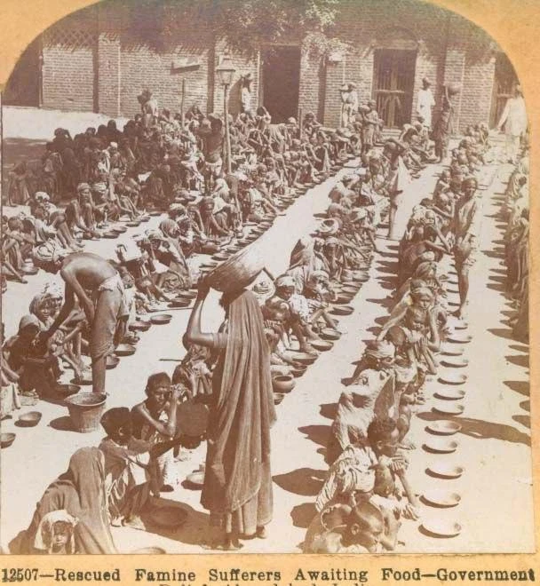
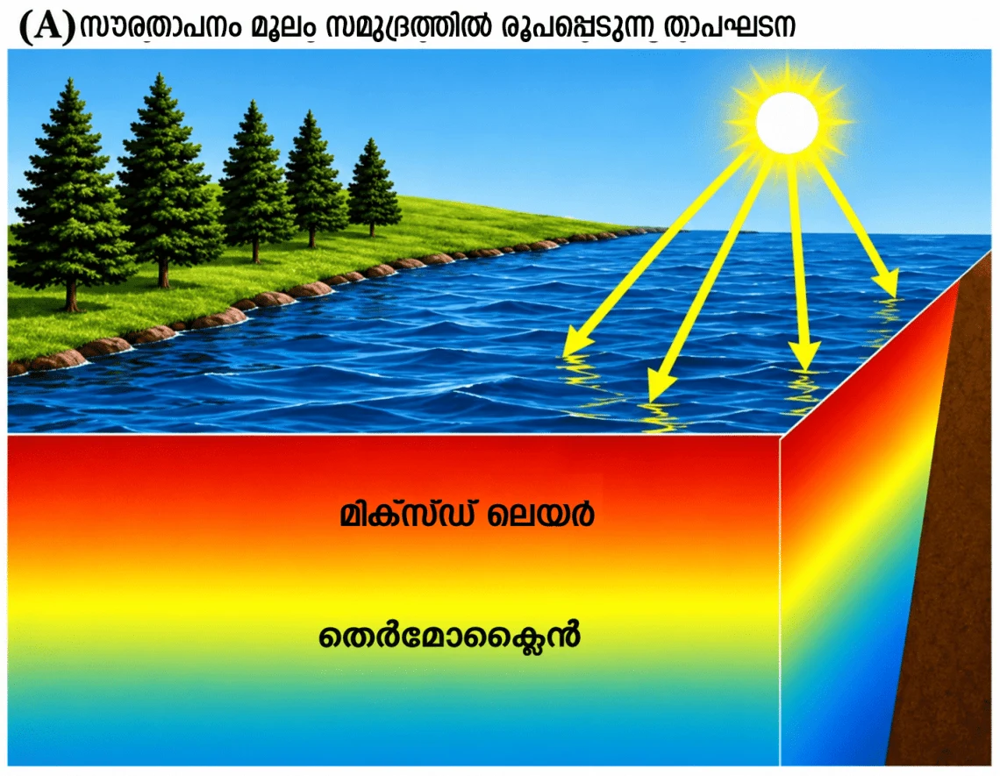
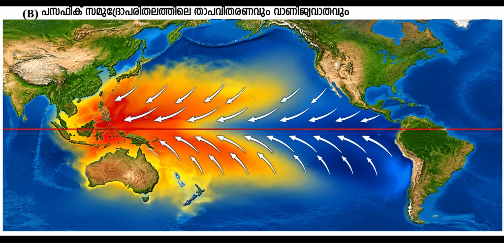
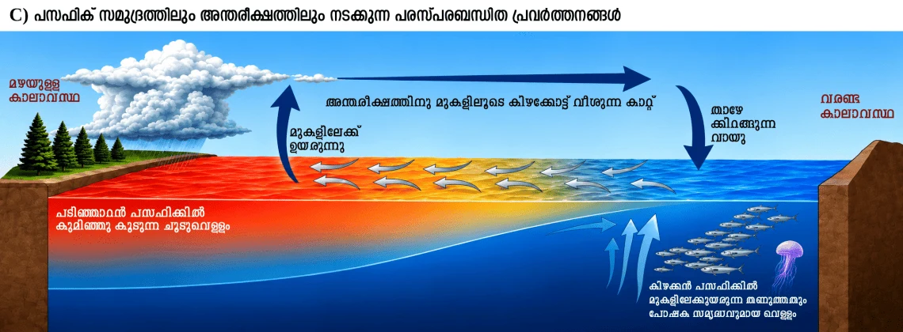
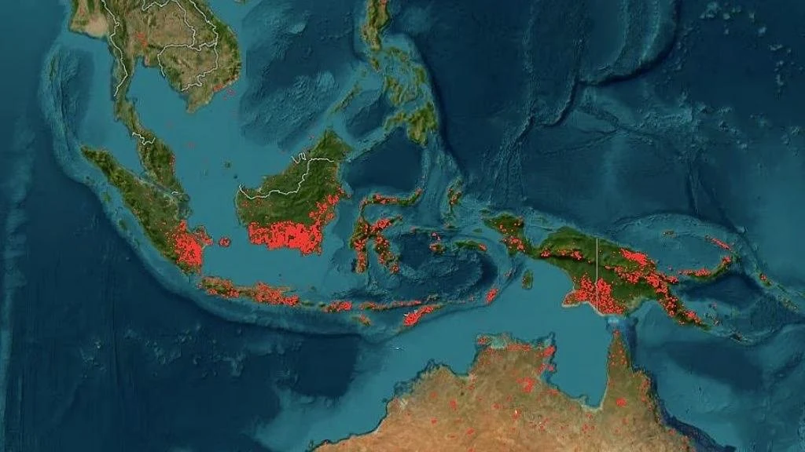

കൊളോണിയൽ ഭരണകൂടത്തിന്റെ ദയാരഹിതമായ ചൂഷണത്താൽ നിവർന്നു നിൽക്കാൻ കഴിയാത്ത അവസ്ഥയിലായിരുന്നു പത്തൊൻപതാം നൂറ്റാണ്ടിന്റെ അവസാനകാലത്ത് ഇന്ത്യയിലെ മഹാഭൂരിപക്ഷം വരുന്ന ഗ്രാമീണ ജനത. ഈ കടുത്ത അവഗണനയുടെയും അടിച്ചമർത്തലുകളുടെയും ഇടയിലും കാർഷികവും അനുബന്ധവുമായ വരുമാന സ്രോതസുകളിലൂടെ അരവയർ നിറച്ചിരുന്ന ആ ജനതയുടെ കരുത്ത് തെക്കുപടിഞ്ഞാറൻ കാലവർഷക്കാറ്റ് കൊണ്ടുവരുന്ന മഴമേഘങ്ങളായിരുന്നു. എന്നാൽ, ചില വർഷങ്ങളിൽ ഈ മേഘങ്ങൾ കരകേറാതെ അവരുടെ അടുപ്പിലെ തീ അണച്ചു. അങ്ങനെ അരവയർ പട്ടിണിയിൽനിന്ന് മുഴുവയർ പട്ടിണിയിലേക്കു നീങ്ങിക്കൊണ്ടിരുന്ന ആ ദുർബലരുടെമേലും തങ്ങളുടെ ചൂഷണം നിർബാധം തുടരാൻ ഒരു മടിയും കാണിക്കാതെ, ആ സ്വാർത്ഥ ഭരണകൂടം അവരെ തുടർച്ചയായ മഹാക്ഷാമങ്ങളിലേക്ക് തള്ളിവിട്ടു. ഇങ്ങനെ, മഴക്കുറവിന്റെയും ഭരണകൂട അനീതിയുടെയും ഫലമായി 1876–78-ലെയും 1896–97-ലെയും ക്ഷാമങ്ങളിലൂടെ തളർന്നിരുന്ന ആ ജനതയുടെ മേൽ ഒരു ഇടിത്തീ പോലെ 1899-ലെ തെക്കുപടിഞ്ഞാറൻ കാലവർഷം വീണ്ടും പരാജയപ്പെടുകയും, തുടർന്ന് 1899–1900 കാലഘട്ടത്തിലെ ഭയാനകമായ മഹാക്ഷാമത്തിലേക്ക് അവരെ വീണ്ടും കൊണ്ടുവന്നെത്തിക്കുകയും ചെയ്തു1. ചരിത്രത്തിൽ 'ഛപ്പാനിയ അക്കാൽ' (Chhappaniya Akal) എന്നറിയപ്പെടുന്ന ഈ ദുരന്തം ഇന്ത്യയുടെ 73 ശതമാനത്തോളം പ്രദേശങ്ങളെയും കടുത്ത വരൾച്ചയുടെ പിടിയിലാക്കി. പട്ടിണിയും ജലദൗർലഭ്യവും അനുബന്ധ രോഗങ്ങളും മൂലം ദശലക്ഷകണക്കിനാളുകൾക്കാണ് അന്ന് ജീവൻ നഷ്ടപ്പെട്ടത്. ജനവാസകേന്ദ്രങ്ങൾ തകരുകയും ആളുകൾ ജീവൻ രക്ഷിക്കാൻ കൂട്ടത്തോടെ പലായനം ചെയ്യുകയും ചെയ്തു. അങ്ങനെ, 1870 മുതൽ 1900 വരെയുള്ള ബ്രിട്ടീഷ് ഇന്ത്യയിലെ മഹാക്ഷാമങ്ങളിൽ ഏറ്റവും വിനാശകരമായ ദുരന്തങ്ങളിലൊന്നായി ഇത് ചരിത്രത്തിൽ രേഖപ്പെടുത്തപ്പെട്ടു1.

ഇന്ത്യയിൽ സ്വാതന്ത്ര്യത്തിനായുള്ള രാഷ്ട്രീയ പ്രസ്ഥാനങ്ങൾ ശക്തിപ്രാപിച്ചുകൊണ്ടിരുന്ന ആ കാലഘട്ടത്തിൽ, തങ്ങളുടെ നയവൈകല്യങ്ങൾക്ക് പുറമെ കാലവർഷത്തിനും ഇതിൽ പങ്കുണ്ടെന്നു മനസ്സിലാക്കിയ ബ്രിട്ടീഷ് ഭരണകൂടം ഇത്തരം കാലാവസ്ഥാ വ്യതിയാനങ്ങൾക്ക് പിന്നിലെ ശാസ്ത്രീയ കാരണങ്ങൾ കണ്ടെത്തുന്നതിനായി ഇന്ത്യൻ കാലാവസ്ഥാ നിരീക്ഷണ വകുപ്പിന്റെ തലവനായി ശാസ്ത്രജ്ഞൻ സർ ഗിൽബർട്ട് വാക്കറിനെ (Sir Gilbert Walker) 1904-ൽ നിയമിച്ചു. അങ്ങനെ, നമ്മുടെ തെക്കുപടിഞ്ഞാറൻ കാലവർഷത്തെ (Southwest Monsoon Rain) പ്രവചിക്കാൻ കഴിഞ്ഞേക്കും എന്ന വിശ്വാസത്തിൽ, ലോകത്തിന്റെ വിവിധ ഭാഗങ്ങളിൽ നിന്നുള്ള കാലാവസ്ഥാ വിവരങ്ങൾ അദ്ദേഹം ശേഖരിക്കുകയും വിശകലനം ചെയ്യുകയും ചെയ്തു. ഇതിലൂടെ, പസഫിക് സമുദ്രത്തിന്റെ കിഴക്കും പടിഞ്ഞാറുമുള്ള ഭാഗങ്ങളിലെ അന്തരീക്ഷ മർദ്ദങ്ങൾ തമ്മിൽ ഒരു 'സീസോ' (see-saw) പോലെയുള്ള ബന്ധമുണ്ടെന്ന് അദ്ദേഹം കണ്ടെത്തി. 'സതേൺ ഓസിലേഷൻ' (Southern Oscillation) എന്ന് അദ്ദേഹം വിളിച്ച ഈ പ്രതിഭാസം ഇന്ത്യൻ കാലവർഷത്തെ ശക്തമായി സ്വാധീനിക്കുന്നുണ്ടെന്നും, അതിനൊപ്പം കാനഡയിലെ ചൂടേറിയ ശൈത്യകാലത്തോടും ദക്ഷിണാഫ്രിക്കയിലെ വരണ്ട കാലാവസ്ഥയോടും ഇതിന് ബന്ധമുണ്ടെന്നും വാക്കർ മനസ്സിലാക്കി. എന്നാൽ, ഈ മാറ്റങ്ങൾ പലപ്പോഴും കാലവർഷത്തിനു ശേഷം സംഭവിക്കുന്നതിനാൽ മഴയുടെ തോത് മുൻകൂട്ടി പ്രവചിക്കുക എന്ന അദ്ദേഹത്തിന്റെ ശ്രമം പരാജയപ്പെട്ടു. കൂടാതെ, ആയിരക്കണക്കിന് കിലോമീറ്ററുകൾ അകലെയുള്ള പ്രദേശങ്ങൾ തമ്മിലുള്ള ഈ ബന്ധത്തിന് പിന്നിലെ ഭൗതിക കാരണങ്ങൾ വിശദീകരിക്കാനും കഴിയാത്തതിനാൽ, ശാസ്ത്രലോകം അദ്ദേഹത്തിന്റെ കണ്ടെത്തലുകളെ വലിയ സംശയത്തോടെയാണ് കണ്ടത്. എന്നാൽ, സമുദ്രവും അന്തരീക്ഷവും തമ്മിലുള്ള സങ്കീർണ്ണമായ ബന്ധത്തെക്കുറിച്ചുള്ള ഏറ്റവും നിർണ്ണായകമായ ചുവടുവെപ്പായിരുന്നു അതെന്ന് പിന്നീട് കാലം തെളിയിച്ചു. അങ്ങനെ, അവിടെവെച്ച് എൽ നിനോ–സതേൺ ഓസിലേഷൻ (ENSO) എന്ന കാലാവസ്ഥാ പ്രതിഭാസത്തിന്റെ ചുരുളഴിക്കാൻ ശാസ്ത്രലോകം ശ്രമങ്ങൾ ആരംഭിച്ചു.2
നമ്മളിന്ന് ഏറ്റവും കൂടുതൽ ചർച്ച ചെയ്യുന്ന ഒരു കാലാവസ്ഥാ പ്രതിഭാസമാണ് എൽ നിനോ. നമ്മിൽനിന്ന് ആയിരക്കണക്കിന് കിലോമീറ്റർ അകലെ, അതിവിശാലമായ പസഫിക് സമുദ്രത്തിൽ നിശബ്ദമായി രൂപംകൊള്ളുന്ന ഈ പ്രതിഭാസം എങ്ങനെയാണ് ലോകത്തിന്റെ വിവിധ ഭാഗങ്ങളിലെ കാലാവസ്ഥയെ സ്വാധീനിക്കുന്നത്? എൽ നിനോയുടെ ചരിത്രം എന്താണ്? മനുഷ്യചരിത്രത്തിന്റെയും ലോകക്രമത്തിന്റെയും ഗതിമാറ്റുന്നതിൽ ഇതിന് എന്ത് പങ്കാണുള്ളത്? ഈ ചോദ്യങ്ങൾക്കുള്ള ഉത്തരങ്ങളിലേക്കുള്ള ഒരു യാത്രയാണ് ഈ ലേഖനം. എൽ നിനോ ലോകകാലാവസ്ഥയിലും മനുഷ്യചരിത്രത്തിലും ചെലുത്തിയതും ചെലുത്തുന്നതുമായ എല്ലാ സ്വാധീനങ്ങളും ഒരൊറ്റ ലേഖനത്തിൽ സമഗ്രമായി ഉൾക്കൊള്ളിക്കുക അസാധ്യമാണ്. അതിനാൽ, ഈ പ്രതിഭാസത്തിന്റെ സവിശേഷമായ സ്വഭാവവും അതിന്റെ ചരിത്രപരവും ശാസ്ത്രീയവുമായ പ്രാധാന്യവും വ്യക്തമാക്കുന്ന ചില പ്രധാന സംഭവങ്ങളിലൂടെ നമുക്കൊന്ന് കടന്നുപോകാം.

ഇവിടെ നമ്മൾ തുറന്നുനോക്കുന്നത് എൽ നിനോയ്ക്ക് പിന്നിലെ സങ്കീർണവും അതേസമയം അതീവ നാടകീയത നിറഞ്ഞതുമായ ശാസ്ത്രമാണ്. കുറച്ച് ശാസ്ത്രീയ പദങ്ങളും ആശയങ്ങളും കടന്നുവരുന്നതിനാൽ ആദ്യം അല്പം സങ്കീർണമായി തോന്നിയേക്കാം. എന്നാൽ മുകളിലെ ചിത്രത്തിന്റെ സഹായത്തോടെ ഈ സമുദ്ര–അന്തരീക്ഷ പ്രക്രിയകളെ നമുക്ക് ലളിതമായി മനസ്സിലാക്കാൻ ശ്രമിക്കാം. നിങ്ങളുടെ കയ്യിലുള്ള ഒരു ഗ്ലോബിലേക്കോ ഭൂപടത്തിലേക്കോ നോക്കിയാൽ, അതിൽ സമുദ്രങ്ങളുടെ അതിവിശാലമായ നീലിമയിൽ വിതറിയിട്ടപോലെ ഭൂഖണ്ഡങ്ങൾ കാണാം. ഭൂമിയുടെ ഉപരിതലത്തിന്റെ വലിയൊരു ഭാഗം മൂടിക്കിടക്കുന്ന ഈ മഹാസമുദ്രങ്ങൾക്ക് സൂര്യപ്രകാശത്തിൽനിന്നുള്ള ചൂട് സംഭരിച്ചുവെക്കുന്നതിലും, അത് ഭൂമിയുടെ വിവിധ ഭാഗങ്ങളിലേക്ക് എത്തിക്കുന്നതിലും വലിയ പങ്കുണ്ട്. എന്നാൽ സമുദ്രോപരിതലത്തിൽ ലഭിക്കുന്ന ഈ ചൂട് അതിന്റെ ആഴങ്ങളിലേക്ക് ഒരേ രീതിയിൽ വിതരണം ചെയ്യപ്പെടുന്നില്ല. മുകളിലെ ചിത്രത്തിൽ (ചിത്രം A) കാണിച്ചിരിക്കുന്നതുപോലെ, ഒരു കേക്കിന്റെ കഷ്ണത്തിലെ വ്യത്യസ്ത സ്വഭാവങ്ങളുള്ള പാളികൾ പോലെയാണ് സമുദ്രജലം നിലകൊള്ളുന്നത്. ഇതിൽ സമുദ്രോപരിതലത്തിൽ സൂര്യപ്രകാശം നേരിട്ട് ആഗിരണം ചെയ്യുകയും, കാറ്റിന്റെയും മറ്റ് ഭൗതിക പ്രക്രിയകളുടെയും നിരന്തരമായ ഇളക്കിമറിക്കൽ മൂലം താരതമ്യേന ഒരേ താപനിലയും സാന്ദ്രതയും കാണിക്കുന്ന ഉപരിതല ജലപാളിയെ മിക്സഡ് ലെയർ (mixed layer) അഥവാ മിശ്രിത പാളി എന്ന് വിളിക്കുന്നു3. സമുദ്രത്തിന്റെ ആഴവുമായി താരതമ്യം ചെയ്യുമ്പോൾ വളരെ നേർത്ത ഈ ജലപാളിയിൽ സംഭരിച്ചിരിക്കുന്ന താപം, ഭൂമിയുടെ മുഴുവൻ അന്തരീക്ഷത്തിൽ അടങ്ങിയിരിക്കുന്ന താപത്തേക്കാൾ കൂടുതലാണ്!4 മാത്രമല്ല, സൂര്യപ്രകാശത്താൽ നേരിട്ട് ചൂടാകുന്ന ഈ ഉപരിതല പാളി ഭൂമധ്യരേഖയോടടുത്തുള്ള ഉഷ്ണമേഖലാ പ്രദേശങ്ങളിൽ വലിയ അളവിൽ താപം സംഭരിച്ചുവെക്കുകയും ചെയ്യുന്നു. എന്നാൽ, ഈ പാളിയുടെ തൊട്ടുതാഴെയായി, ആഴത്തിലേക്ക് പോകുംതോറും താപനില അതിവേഗം കുറയുന്ന മറ്റൊരു പാളി കാണാം. അതാണ് ‘തെർമോക്ലൈൻ’. ആഗോള കാലാവസ്ഥയുടെ താളം നിർണയിക്കുന്നതിൽ ഈ രണ്ട് ജലപാളികൾക്കും നിർണായക പങ്കുണ്ട്.

ഇനി നമുക്ക് ഭൂമിയിലെ ഏറ്റവും വലിയ സമുദ്രമായ പസഫിക് സമുദ്രത്തിലേക്ക് ശ്രദ്ധകേന്ദ്രീകരിക്കാം. മുകളിലെ ചിത്രത്തിലെ (ചിത്രം B) പസഫിക്കിലേക്ക് ഒന്ന് നോക്കൂ. അതിവിശാലമായി കിടക്കുന്ന ഈ മഹാസമുദ്രത്തിന്റെ ഏറ്റവും വീതിയേറിയ ഭാഗം സ്ഥിതിചെയ്യുന്നത് ഉഷ്ണമേഖലാ പ്രദേശത്താണ്. ഇവിടെ ഭൂമധ്യരേഖയിലൂടെ പസഫിക്കിന്റെ പടിഞ്ഞാറുനിന്ന് കിഴക്കോട്ട് ഒന്ന് സഞ്ചരിക്കണമെങ്കിൽ 15,000 കിലോമീറ്ററിലധികം ദൂരം താണ്ടണം. അതായത്, കന്യാകുമാരിയിൽനിന്ന് ഡൽഹിയിലേക്ക് വിമാനത്തിൽ തുടർച്ചയായി ഏഴുതവണ യാത്ര ചെയ്യുന്നതിനോട് ഏകദേശം തുല്യമായ ദൂരം! ഇങ്ങനെ വലിയൊരളവിൽ സൗരോർജം സംഭരിച്ചുവെച്ചിട്ടുള്ള അതിവിശാലമായ ജലപരപ്പ് ഉഷ്ണമേഖലയിൽ സ്ഥിതിചെയ്യുന്നതിനാൽ, ഇതിന്റെ ഉപരിതലപാളിയിലും (മിക്സഡ് ലെയർ), അതിനു മുകളിലുള്ള അന്തരീക്ഷത്തിലും നടക്കുന്ന മാറ്റങ്ങൾ ലോകകാലാവസ്ഥയിൽ വലിയ സ്വാധീനം ചെലുത്തുന്നു.1,4
ഇനി ഇതേ ചിത്രത്തിൽ (ചിത്രം B) കാണിച്ചിരിക്കുന്ന അമ്പടയാളം ശ്രദ്ധിക്കൂ, അത് സമുദ്രോപരിതലത്തിൽ വീശുന്ന കാറ്റിന്റെ പൊതുവായ ദിശയെയാണ് കാണിച്ചിരിക്കുന്നത്. ‘വാണിജ്യവാതങ്ങൾ’ എന്ന പേരിൽ അറിയപ്പെടുന്ന ഈ കാറ്റുകൾ ഭൂമധ്യരേഖയ്ക്ക് സമീപം സാധാരണയായി അമ്പടയാളം സൂചിപ്പിക്കുന്നതുപോലെ കിഴക്കുനിന്ന് പടിഞ്ഞാറോട്ട് വീശുന്നു. ഇവ ഇങ്ങനെ സ്ഥിരമായി വീശുന്നതിനാൽ, സമുദ്രോപരിതലത്തിലെ ചൂടുവെള്ളത്തെ പടിഞ്ഞാറുള്ള ഇന്തോനേഷ്യയ്ക്കും ഓസ്ട്രേലിയയ്ക്കും സമീപത്തേക്ക് തുടർച്ചയായി തള്ളിക്കൊണ്ടുപോകുന്നു. ഇങ്ങനെ അടിഞ്ഞുകൂടിയ ചൂടുവെള്ളമാണ് ചിത്രത്തിൽ പസഫിക്കിന്റെ പടിഞ്ഞാറൻ ഭാഗത്ത് വ്യാപിച്ചുകിടക്കുന്ന കടുത്ത ഓറഞ്ച് നിറം സൂചിപ്പിക്കുന്നത്. ഉപരിതലജലത്തെ കാറ്റ് ഇങ്ങനെ പടിഞ്ഞാറോട്ട് തള്ളിക്കൊണ്ടുപോകുന്നതിനാൽ, കിഴക്കൻ പസഫിക്കിന്റെ ഉപരിതലത്തിൽ താരതമ്യേന തണുത്ത വെള്ളമാണ് കാണപ്പെടുന്നത്. അതിനാലാണ്, കിഴക്കൻ പസഫിക്കിനെ ഇവിടെ നീല നിറത്തിൽ കാണിച്ചിരിക്കുന്നത്. ഇങ്ങനെ ചൂടുവെള്ളം പസഫിക്കിന്റെ പടിഞ്ഞാറൻ ഭാഗത്തേക്ക് തുടർച്ചയായി അടിഞ്ഞുകൂടുന്നത് സമുദ്രോപരിതലത്തിൽ മാത്രമല്ല അതിന്റെ ഉള്ളറകളിലും സ്വാധീനം ചെലുത്തുന്നു. അത് മനസ്സിലാക്കാൻ ഇനി താഴെ നൽകിയിരിക്കുന്ന പസഫിക് സമുദ്രത്തിന്റെ ക്രോസ്-സെക്ഷൻ (പസഫിക് സമുദ്രത്തെ ഭൂമധ്യരേഖയിലൂടെ മുറിച്ചുവെച്ചിരിക്കുന്നു) ചിത്രത്തിലേക്ക് ഒന്ന് നോക്കാം (ചിത്രം C). പടിഞ്ഞാറൻ പസഫിക്കിൽ ചൂടുവെള്ളം വലിയ അളവിൽ അടിഞ്ഞുകൂടുന്നതോടെ അവിടെ ജലനിരപ്പുയർത്താനും മിക്സഡ് ലെയറിന്റെ ആഴംകൂട്ടി, അതിന് തൊട്ടുതാഴെയുള്ള തണുത്ത തെർമോക്ലൈൻ കൂടുതൽ ആഴത്തിലേക്ക് താഴ്ത്തിനിർത്തുകയും ചെയ്യുന്നു. 2,4

എന്നാൽ, കിഴക്കൻ പസഫിക്കിൽ സ്ഥിതി നേരെ വിപരീതമാണ്. ഉപരിതലത്തിലെ ചൂടുവെള്ളം നീക്കം ചെയ്യപ്പെടുന്നതിനാൽ ഇവിടെ മിക്സഡ് ലെയർ താരതമ്യേന നേർത്തതും അതിന് താഴെയുള്ള തെർമോക്ലൈൻ ഉപരിതലത്തോട് കൂടുതൽ അടുത്തതുമാണ്. അതിനാൽ സമുദ്രത്തിന്റെ ആഴങ്ങളിൽനിന്നുള്ള തണുത്തതും പോഷകസമൃദ്ധവുമായ ജലത്തിന് മുകളിലേക്ക് ഉയർന്നുവരാൻ എളുപ്പമാകുന്നു (Upwelling). ഇങ്ങനെ, ആഴക്കടലിൽനിന്ന് ഉയർന്നുവരുന്ന പോഷകസമൃദ്ധമായ ജലം സമുദ്രത്തിലെ ജൈവോൽപ്പാദനത്തെ വർധിപ്പിക്കുകയും, അതുവഴി കിഴക്കൻ പസഫിക്കിലെ രാജ്യങ്ങളായ പെറുവിന്റെയും ഇക്വഡോറിന്റെയും തീരപ്രദേശങ്ങളെ ലോകത്തിലെ പ്രധാന മത്സ്യബന്ധന മേഖലകളിലൊന്നാക്കി മാറ്റുകയും ചെയ്യുന്നു 2,4
എന്നാൽ കഥ ഇവിടെ തീരുന്നില്ല, പസഫിക് സമുദ്രത്തിന്റെ പടിഞ്ഞാറും കിഴക്കും തമ്മിലുണ്ടാകുന്ന ഈ താപവ്യത്യാസം അന്തരീക്ഷത്തിലും കാര്യമായ മാറ്റങ്ങളുണ്ടാക്കുന്നു. പടിഞ്ഞാറൻ പസഫിക്കിലെ ചൂടുള്ള സമുദ്രോപരിതലത്തിൽനിന്ന് വലിയ അളവിൽ ജലം നീരാവിയായി, ചിത്രത്തിൽ (ചിത്രം C) കാണിച്ചിരിക്കുന്നതുപോലെ, അന്തരീക്ഷത്തിലേക്ക് ഉയരുന്നു. ഇങ്ങനെ ഉയർന്നുപൊങ്ങുന്ന ഈർപ്പംനിറഞ്ഞ വായു അവിടെ മഴയുണ്ടാക്കുകയും അത് പടിഞ്ഞാറൻ പസഫിക്കിലെ രാജ്യങ്ങളെ പച്ചപ്പ് നിറഞ്ഞ പ്രദേശമായി മാറ്റുകയും ചെയ്യുന്നു. ഇങ്ങനെ മുകളിലെത്തി ജലാംശം നഷ്ടപ്പെട്ട വായു പിന്നീട് ചിത്രത്തിൽ കാണിച്ചിരിക്കുന്നതുപോലെ അന്തരീക്ഷത്തിന്റെ മുകളിലൂടെ കിഴക്കൻ പസഫിക്കിലെത്തി അവിടെ താഴേക്കിറങ്ങുന്നു. അതുവഴി കിഴക്കൻ പസഫിക്കിലെ രാജ്യങ്ങൾ വരണ്ടപ്രദേശമായി മാറുന്നു. ഇങ്ങനെ കിഴക്കൻ പസഫിക്കിൽ താഴുന്ന വായു സമുദ്രോപരിതലത്തിലൂടെ പടിഞ്ഞാറോട്ട് വാണിജ്യവാതമായി വീണ്ടും പടിഞ്ഞാറോട്ട് സഞ്ചരിച്ച് കൂടുതൽ ചൂടുവെള്ളത്തെ പടിഞ്ഞാറോട്ട് തള്ളിക്കൊണ്ടുപോകുകയും ചെയ്യുന്നു അങ്ങനെ മുകളിൽ പറഞ്ഞ പ്രവർത്തനങ്ങൾ വീണ്ടും ആവർത്തിക്കുന്നു. ഇങ്ങനെ കിഴക്ക്–പടിഞ്ഞാറ് ദിശയിൽ ഉഷ്ണമേഖലാ പസഫിക്കിന് മുകളിലൂടെ നടക്കുന്ന ഈ വലിയതോതിലുള്ള വായുസഞ്ചാര ചക്രത്തെയാണ് വാക്കർ സർക്കുലേഷൻ (Walker Circulation) എന്ന് വിളിക്കുന്നത്.2,4 ഇങ്ങനെ, സമുദ്രോപരിതലത്തിലെ മിക്സഡ് ലെയറിലും തെർമോക്ലൈനിലും നടക്കുന്ന പ്രവർത്തനങ്ങളും അതിന് മുകളിലുള്ള അന്തരീക്ഷത്തിലെ ചലനങ്ങളും പരസ്പരം ഇഴചേർന്നാണ് നിലകൊള്ളുന്നത്. സമുദ്രവും അന്തരീക്ഷവും തമ്മിലുള്ള ഈ സൂക്ഷ്മമായ സന്തുലിതാവസ്ഥ ഉഷ്ണമേഖലാ പ്രദേശങ്ങളിലെ കാലാവസ്ഥയെ പ്രത്യക്ഷത്തിലും ലോകത്തിന്റെ മറ്റു ഭാഗങ്ങളിലെ കാലാവസ്ഥയെ പരോക്ഷമായും നിർണയിക്കുന്നതിൽ നിർണായക പങ്കുവഹിക്കുന്നു. ഇനി, ഈ സമുദ്ര–അന്തരീക്ഷ ഇടപെടലങ്ങളുടെ വേദിയിലാണ് നമ്മുടെ എൽ നിനോ അരങ്ങേറുന്നത്. 2,4
ചില വർഷങ്ങളിൽ സമുദ്രവും അന്തരീക്ഷവും തമ്മിലുള്ള ഈ പരസ്പരബന്ധത്തിന്റെ ഇഴ പൊട്ടുന്നു. കോഴിയാണോ കോഴിമുട്ടയാണോ ആദ്യമുണ്ടായതെന്നു ചോദിക്കുന്നതുപോലെ, ഇന്നും ഇവിടെ ഈ മാറ്റങ്ങളുടെ തുടക്കം എവിടെയാണ് ആദ്യം സംഭവിക്കുന്നതെന്ന് കണ്ടെത്താനായിട്ടില്ല. അതിനാൽ, നമുക്ക് തൽക്കാലം അന്തരീക്ഷത്തിൽനിന്ന് തുടങ്ങാം. ഭൂമധ്യരേഖയ്ക്ക് സമീപമുള്ള വാണിജ്യവാതങ്ങൾ ചില സാഹചര്യങ്ങളിൽ പെട്ടെന്ന് ദുർബലമാകുകയോ, ചിലപ്പോൾ പതിവിന് വിപരീതമായി പടിഞ്ഞാറുനിന്ന് കിഴക്കോട്ട് വീശാനോ തുടങ്ങി എന്ന് വിചാരിക്കുക. ഇതോടെ സമുദ്രോപരിതലത്തിലെ ചൂടുവെള്ളത്തിന്റെ കാറ്റിനാലുള്ള പടിഞ്ഞാറോട്ടുള്ള തള്ളൽ ദുർബലമാകുന്നു. അതിലൂടെ, പടിഞ്ഞാറൻ പസഫിക്കിൽ കാലങ്ങളായി അടിഞ്ഞുകൂടിയിരുന്ന ചൂടുവെള്ളം കിഴക്കോട്ട് നീങ്ങി കിഴക്കും പടിഞ്ഞാറും തമ്മിലുള്ള സമുദ്രനിരപ്പിലെ വ്യത്യാസവും താപവ്യത്യാസവും കുറയുന്നു. അതിന്റെ തുടർച്ചയായി ഇത് വാണിജ്യ വാതങ്ങളെ വീണ്ടും ദുർബലപ്പടുത്തുന്നു.2,4
ഇങ്ങനെ, ചൂടുവെള്ളത്തിന്റെ കിഴക്കോട്ടുള്ള ഒഴുക്കും അതിനോടനുബന്ധിച്ച അന്തരീക്ഷ വ്യതിയാനങ്ങളുമാണ് എൽ നിനോ എന്നത് പൊതുവെ ലളിതമായി വിശദീകരിക്കാറുള്ളത്. എന്നാൽ, അതിനപ്പുറം വളരെ സങ്കീർണമായ ഒരു പ്രക്രിയയാണ് ഇവിടെ നടക്കുന്നതെന്ന് 1970-കളുടെ മധ്യത്തിൽ ഹവായ് സർവകലാശാലയിലെ സമുദ്രശാസ്ത്രജ്ഞനായ ക്ലോസ് വിർട്കി (Klaus Wyrtki) ചൂണ്ടിക്കാട്ടി. മധ്യ–പടിഞ്ഞാറൻ പസഫിക്കിലെ കാറ്റിലുണ്ടാകുന്ന പെട്ടെന്നുള്ള മാറ്റങ്ങൾ സമുദ്രത്തിനുള്ളിൽ വലിയ തരംഗങ്ങൾക്ക് രൂപം നൽകുന്നതായി അദ്ദേഹം വിശദീകരിച്ചു. അവയിൽ പ്രധാനപ്പെട്ട ഒന്നാണ് ഭൂമധ്യരേഖയ്ക്ക് സമാന്തരമായി കിഴക്കോട്ട് സഞ്ചരിക്കുന്ന ‘ഭൂമധ്യരേഖാ കെൽവിൻ തരംഗങ്ങൾ’ (Equatorial Kelvin waves). കടൽത്തീരത്ത് നാം കാണുന്ന സാധാരണ തിരമാലകളിൽനിന്ന് തികച്ചും വ്യത്യസ്തമായ ഈ തരംഗങ്ങൾ സമുദ്രത്തിന്റെ ആന്തരിക ഘടനയിലൂടെയാണ് അതിവേഗം സഞ്ചരിക്കുന്നത്. രൂപംകൊണ്ട പ്രദേശത്തുനിന്ന് ഏതാനും മാസങ്ങൾക്കുള്ളിൽ പസഫിക്കിന്റെ കിഴക്കൻ ഭാഗത്തെത്തുന്ന ഈ തരംഗങ്ങൾ അവിടെയുള്ള തെർമോക്ലൈനെ കൂടുതൽ ആഴത്തിലേക്ക് താഴ്ത്തുന്നു. ഇതോടെ ആഴത്തിൽനിന്നുള്ള തണുത്ത ജലം ഉപരിതലത്തിലേക്ക് ഉയരുന്ന പ്രക്രിയ ദുർബലമാകുകയും കിഴക്കൻ പസഫിക്കിലെ സമുദ്രോപരിതല താപനില ഉയരുകയും ചെയ്യുന്നു. സമുദ്രം ഇങ്ങനെ ചൂടാകുന്നതോടെ അന്തരീക്ഷത്തിലും മാറ്റങ്ങൾ സംഭവിക്കുന്നു. ചൂടുള്ള സമുദ്രോപരിതലത്തിൽനിന്ന് അന്തരീക്ഷത്തിലേക്ക് കൂടുതൽ ചൂടും ഈർപ്പവും എത്തുന്നതോടെ മേഘരൂപീകരണവും മഴയും കിഴക്കൻ പസഫിക്കിലേക്ക് മാറുന്നു. സാധാരണയായി വരണ്ടുകിടക്കുന്ന കിഴക്കൻ പസഫിക്കിൽ ശക്തമായ മഴ ലഭിക്കുമ്പോൾ, ഇതിന് വിപരീതമായി പടിഞ്ഞാറൻ പസഫിക്കിൽ വരൾച്ച രൂക്ഷമാകുന്നു. ഇതോടെ കിഴക്കും പടിഞ്ഞാറും തമ്മിലുള്ള അന്തരീക്ഷമർദ്ദ വ്യത്യാസത്തിലും മാറ്റമുണ്ടാകുകയും വാണിജ്യവാതങ്ങൾ കൂടുതൽ ദുർബലമാകുകയും ചെയ്യുന്നു. ഇവിടെ ശ്രദ്ധിക്കേണ്ട പ്രധാന കാര്യം, ഈ മാറ്റങ്ങൾ ഒരു ദിശയിൽ മാത്രം സംഭവിക്കുന്നില്ല എന്നതാണ്. സമുദ്രത്തിലെ ഒരു മാറ്റം അന്തരീക്ഷത്തെ സ്വാധീനിക്കുകയും, അന്തരീക്ഷത്തിലെ ആ മാറ്റം വീണ്ടും സമുദ്രത്തിലെ മാറ്റത്തെ കൂടുതൽ ശക്തിപ്പെടുത്തുകയും ചെയ്യുന്നു. അങ്ങനെ സമുദ്രവും അന്തരീക്ഷവും പരസ്പരം ശക്തിപ്പെടുത്തിക്കൊണ്ടിരിക്കുന്ന ഒരു പ്രതികരണചക്രം രൂപപ്പെടുന്നു. ഈ പരസ്പര ശക്തിപ്പെടുത്തലിലൂടെയാണ് എൽ നിനോ പൂർണമായി വികസിക്കുന്നത്. കിഴക്കൻ പസഫിക്കിലെ സമുദ്രോപരിതല താപനില അസാധാരണമായി ഉയരുന്ന ഈ സമുദ്രാവസ്ഥയെ ‘എൽ നിനോ’ എന്നും, അതിനോടനുബന്ധിച്ച് അന്തരീക്ഷമർദ്ദ വിതരണത്തിൽ ഉണ്ടാകുന്ന വലിയ തോതിലുള്ള മാറ്റങ്ങളെ ‘സതേൺ ഓസിലേഷൻ’ (Southern Oscillation) എന്നും വിളിക്കുന്നു. സമുദ്രവും അന്തരീക്ഷവും പരസ്പരം ബന്ധപ്പെട്ടു പ്രവർത്തിക്കുന്ന ഈ രണ്ട് ഘടകങ്ങളെയും ചേർത്താണ് ‘എൽ നിനോ–സതേൺ ഓസിലേഷൻ’, അഥവാ എൻസോ (ENSO), എന്ന് ശാസ്ത്രലോകം വിളിക്കുന്നത്.2,4
എന്നാൽ എൽ നിനോയുടെ കഥ ഇവിടെ അവസാനിക്കുന്നില്ല. അതിന്റെ ഏറ്റവും കൗതുകകരമായ സവിശേഷതകളിലൊന്ന്, സ്വന്തം നാശത്തിലേക്കുള്ള വിത്തും എൽ നിനോ ആരംഭിക്കുമ്പോൾ തന്നെ അത് വഹിക്കുന്നു എന്നതാണ്. കിഴക്കോട്ട് സഞ്ചരിക്കുന്ന കെൽവിൻ തരംഗങ്ങൾക്കൊപ്പം, കാറ്റിലുണ്ടാകുന്ന മാറ്റങ്ങൾ പടിഞ്ഞാറോട്ട് സഞ്ചരിക്കുന്ന മറ്റൊരു തരംഗത്തിനും രൂപം നൽകുന്നു. ഇവയാണ് ‘റോസ്ബി തരംഗങ്ങൾ’ (Rossby waves). കെൽവിൻ തരംഗങ്ങളെ അപേക്ഷിച്ച് വളരെ സാവധാനത്തിൽ പടിഞ്ഞാറോട്ട് സഞ്ചരിക്കുന്ന റോസ്ബി തരംഗങ്ങൾ പടിഞ്ഞാറൻ പസഫിക്കിന്റെ അതിർത്തിയിലെത്തുന്നു. അവിടെ ഭൂഖണ്ഡത്തിൽ തട്ടി പ്രതിഫലിച്ച ശേഷം ഇവ വീണ്ടും കിഴക്കോട്ട് സഞ്ചരിക്കുന്ന കെൽവിൻ തരംഗങ്ങളായി രൂപാന്തരപ്പെടുന്നു. എന്നാൽ തിരിച്ചെത്തുന്ന ഈ കെൽവിൻ തരംഗങ്ങളുടെ സ്വഭാവം ആദ്യഘട്ടത്തിലെ തരംഗങ്ങളിൽനിന്ന് വ്യത്യസ്തമാണ്. നേരത്തെ ചൂടുവെള്ളത്തിന്റെ പാളിയെ കൂടുതൽ ആഴത്തിലേക്ക് തള്ളിനീക്കി തെർമോക്ലൈനിനെ താഴേക്ക് കൊണ്ടുപോയിരുന്നെങ്കിൽ, ഇപ്പോൾ ഇവ അതിന്റെ വിപരീതമായ മാറ്റമാണ് സൃഷ്ടിക്കുന്നത്. ചൂടുവെള്ളത്തിന്റെ പാളി വീണ്ടും നേർത്തതാകുകയും തെർമോക്ലൈൻ ഉപരിതലത്തിലേക്ക് ഉയരുകയും ചെയ്യുന്നു. മാസങ്ങൾക്കുശേഷം ഈ തരംഗങ്ങൾ കിഴക്കൻ പസഫിക്കിലെത്തുമ്പോൾ, ആഴങ്ങളിലെ തണുത്ത വെള്ളം വീണ്ടും ഉപരിതലത്തിലേക്ക് ഉയരാൻ തുടങ്ങുന്നു. ഇതോടെ കിഴക്കൻ പസഫിക്കിലെ സമുദ്രോപരിതല താപനില കുറയുകയും, അതിന്റെ പ്രതിഫലനം അന്തരീക്ഷത്തിലും പ്രകടമാവുകയും ചെയ്യുന്നു. എൽ നിനോയുടെ ശക്തി ക്രമേണ കുറയുകയും ഒടുവിൽ ആ പ്രതിഭാസം അവസാനിക്കുകയും ചെയ്യുന്നു. ചില അവസരങ്ങളിൽ ഈ തിരിച്ചുപോക്ക് സാധാരണ നിലയേക്കാൾ ശക്തമാകാം. അപ്പോൾ പസഫിക് സമുദ്രത്തിൽ എൽ നിനോയുടെ വിപരീത അവസ്ഥയായ ‘ലാ നിന’ (La Niña) രൂപപ്പെടുന്നു. അതുകൊണ്ടുതന്നെ ചില എൽ നിനോ സംഭവങ്ങൾക്ക് പിന്നാലെ അടുത്ത സീസണുകളിൽ തന്നെ ലാ നിന രൂപപ്പെടാം. ചുരുക്കിപ്പറഞ്ഞാൽ, എൽ നിനോ അല്ലെങ്കിൽ എൻസോ വെറും ചൂടുവെള്ളം കിഴക്കോട്ട് ഒഴുകുന്ന ഒരു പ്രതിഭാസമല്ല. കാറ്റും സമുദ്രവും ചൂടും മർദ്ദവും മഴയും ആന്തരിക തരംഗങ്ങളും എല്ലാമുൾപ്പെടുന്ന ഒരു വലിയ പ്രതികരണചക്രമാണ് അത്. ഈ സങ്കീർണ്ണമായ സമുദ്ര–അന്തരീക്ഷ ബന്ധം മനസ്സിലാക്കിയതോടെയാണ് എൽ നിനോയെക്കുറിച്ചുള്ള നമ്മുടെ അറിവും അതിനെ പ്രവചിക്കാനുള്ള ശ്രമങ്ങളും പുതിയൊരു ഘട്ടത്തിലേക്ക് കടന്നത്. 2,4
എൽ നിനോയെക്കുറിച്ചുള്ള ശാസ്ത്രീയ പഠനങ്ങൾ ആരംഭിക്കുന്നതിന് നൂറ്റാണ്ടുകൾക്കുമുമ്പേ തന്നെ, കിഴക്കൻ പസഫിക്കിലെ പെറു തീരത്തെ സമുദ്രജലം സാധാരണയേക്കാൾ കൂടുതൽ തണുപ്പുള്ളതായി സമുദ്രസഞ്ചാരികൾ ശ്രദ്ധിച്ചിരുന്നു. 1582-ൽ ക്രിസ്ത്യൻ പുരോഹിതനായ ജോസഫ് ഡി അക്കോസ്റ്റ രേഖപ്പെടുത്തിയതനുസരിച്ച്, നാവികർ തങ്ങളുടെ വൈൻ കുപ്പികൾ ഈ സമുദ്രഭാഗത്ത് മുക്കിവെച്ച് തണുപ്പിക്കാറുണ്ടത്രേ. ഇവിടെ ഈ അസാധാരണ തണുപ്പിന് പ്രധാന കാരണം ആഴക്കടലിലെ തണുത്ത ജലം ഉപരിതലത്തിലേക്ക് ഉയർന്നുവരുന്നതാണെങ്കിലും (Upwelling) ഇതിനു പുറമെ ദക്ഷിണ ധ്രുവപ്രദേശങ്ങളിൽ നിന്നുള്ള തണുത്ത ജലവും വഹിച്ചുകൊണ്ട് ഇവിടേക്ക് എത്തുന്ന ഒരു സമുദ്രപ്രവാഹവും നിർണായക പങ്ക് വഹിക്കുന്നുണ്ട്. ‘പെറു പ്രവാഹം’ (Peru Current) എന്നറിയപ്പെട്ടിരുന്ന ഈ പ്രവാഹത്തെക്കുറിച്ച് 1802–1803 കാലഘട്ടത്തിൽ പെറു തീരം സന്ദർശിച്ച പ്രശസ്ത ജർമൻ പ്രകൃതിശാസ്ത്രജ്ഞനായ അലക്സാണ്ടർ വോൺ ഹംബോൾട്ട് കൂടുതൽ പഠിക്കുകയും അതിന്റെ താപനിലയും വേഗതയും കൃത്യമായി അളന്ന് രേഖപ്പെടുത്തിവെക്കുകയും ചെയ്തു. അങ്ങനെ അദ്ദേഹത്തോടുള്ള ആദരസൂചകമായാണ് ഇതിനെ പിന്നീട് ഹംബോൾട്ട് പ്രവാഹം (Humboldt Current) എന്ന പേരിലും വിളിക്കാൻ തുടങ്ങിയത്. എന്നാൽ ഈ സമുദ്രഭാഗത്തിന്റെ അസാധാരണ തണുപ്പിനെ വകഞ്ഞുമാറ്റി ചില വർഷങ്ങളിൽ പെട്ടെന്ന് ചൂടാകുന്ന എൽനിനോ പ്രതിഭാസത്തിന്റെ സൂചനകൾ പല നാവികരും മത്സ്യത്തൊഴിലാളികളും അനുഭവിച്ചറിഞ്ഞിരുന്നുവെങ്കിലും അതിനെക്കുറിച്ചുള്ള തുടർച്ചയായ ശാസ്ത്രീയ നിരീക്ഷണങ്ങൾ അന്ന് കാര്യമായുണ്ടായിരുന്നില്ല. അതിനാൽ എൽ നിനോ സംഭവങ്ങളെ കൃത്യമായി തിരിച്ചറിയാനും അവയുടെ ആവർത്തനസ്വഭാവം മനസ്സിലാക്കാനും പിന്നെയും കാലമേറെക്കഴിയേണ്ടി വന്നു1 .
ഈ പ്രതിഭാസത്തിന് ‘എൽ നിനോ’ (El Niño) എന്ന പേര് എപ്പോഴാണ് ലഭിച്ചതെന്ന് കൃത്യമായി വ്യക്തമല്ല. കോളനിവൽക്കരണ കാലഘട്ടത്തിൽ തീരദേശ സമൂഹങ്ങൾ ക്രിസ്തുമതം സ്വീകരിച്ചതിന് ശേഷമായിരിക്കാം ഈ പേര് പ്രചാരത്തിലായത്. ഡിസംബർ മാസത്തിൽ, ക്രിസ്തുമസ് കാലത്തോട് അനുബന്ധിച്ചാണ് ഈ ചൂടുവെള്ള പ്രതിഭാസം പലപ്പോഴും അനുഭവപ്പെട്ടിരുന്നത്. അതിനാൽ ഉണ്ണിയേശുവിനെ സൂചിപ്പിക്കുന്ന സ്പാനിഷ് പദമായ ‘El Niño’ (The Christ Child) പെറുവിലെ മത്സ്യത്തൊഴിലാളികൾ ഈ പ്രതിഭാസത്തിന് ഉപയോഗിച്ചുതുടങ്ങിയതായാണ് കരുതുന്നത്. പ്രാദേശിക സംസാരത്തിൽ ഒതുങ്ങിനിന്നിരുന്ന ഈ പദം പുസ്തകങ്ങളിൽ ആദ്യമായി പ്രത്യക്ഷപ്പെടുന്നത് 1891-ലും 1894-ലുമാണ്. അതിനാൽ തന്നെ വിശ്വാസയോഗ്യമായ തുടർച്ചയായ രേഖകളുടെ അഭാവം മൂലം, കഴിഞ്ഞകാലത്തെ എൽ നിനോ സംഭവങ്ങളെ കൃത്യമായി തിരിച്ചറിയാൻ കഴിഞ്ഞത് പ്രധാനമായും 1850-ന് ശേഷമുള്ള വിവരങ്ങളുടെ അടിസ്ഥാനത്തിലാണ്. എന്നാൽ മനുഷ്യർ ക്രമബദ്ധമായി രേഖപ്പെടുത്തിയില്ലെങ്കിലും, പ്രകൃതിയിതിന്റെ ചരിത്രം തടാകങ്ങളിലെയും സമുദ്രങ്ങളിലെയും അവശിഷ്ട പാളികൾ (sediments), മരങ്ങളുടെ വാർഷിക വലയങ്ങൾ (tree rings), പവിഴപ്പുറ്റുകൾ എന്നിവയിൽ പതിഞ്ഞ കാലാവസ്ഥാ സൂചനകൾ പിന്തുടർന്ന്, നമ്മുടെ ഗവേഷകർ ആയിരക്കണക്കിന് വർഷങ്ങൾ പഴക്കമുള്ള എൽ നിനോ സംഭവങ്ങളുടെ ചരിത്രം ഇന്ന് പുനർനിർമ്മിച്ചിട്ടുണ്ട്.1
ആമുഖത്തിൽ പറഞ്ഞതുപോലെ, ഇരുപതാം നൂറ്റാണ്ടിന്റെ തുടക്കത്തിൽ ഇന്ത്യയിലെത്തിയ ഗിൽബർട്ട് വാൾക്കറുടെ പഠനങ്ങളോടെയാണ് എൽ നിനോയെക്കുറിച്ചുള്ള ശാസ്ത്രീയ അന്വേഷണങ്ങൾക്ക് പുതിയൊരു ദിശ ലഭിച്ചത്. എന്നാൽ, എൽ നിനോയുടെ ഭൗതിക സ്വഭാവം പൂർണമായി മനസ്സിലാക്കാൻ പിന്നെയും നിരവധി പതിറ്റാണ്ടുകൾ വേണ്ടിവന്നു. ഇതിനിടെ, 1911, 1925, 1953 വർഷങ്ങളിലുണ്ടായ ശക്തമായ എൽ നിനോ സംഭവങ്ങൾ ശാസ്ത്രീയ ജേണലുകളിൽ വലിയ ചർച്ചകൾക്ക് വഴിവെച്ചു. തുടർന്ന്, 1957–1958 കാലഘട്ടം ‘അന്താരാഷ്ട്ര ഭൗമശാസ്ത്ര വർഷം’ (International Geophysical Year) ആയി ആചരിക്കപ്പെട്ടതോടെ, എൽ നിനോയെക്കുറിച്ചുള്ള വിപുലമായ നിരീക്ഷണങ്ങൾക്കും പഠനങ്ങൾക്കും കൂടുതൽ അവസരമൊരുങ്ങി. യാദൃച്ഛികമെന്നു തോന്നാവുന്ന മറ്റൊരു വസ്തുതയും ഈ കാലഘട്ടത്തിനുണ്ട്, 1957–1958 കാലഘട്ടം ശക്തമായ ഒരു എൽ നിനോ സംഭവത്തിനും സാക്ഷ്യം വഹിച്ചു; അതേ കാലയളവിൽ, 1958-ലാണ് സർ ഗിൽബർട്ട് വാക്കർ അന്തരിച്ചതും.
പിന്നീട് ലോകമെമ്പാടും നടന്ന വിപുലമായ നിരീക്ഷണങ്ങളിലൂടെ, എൽ നിനോ വെറുമൊരു പ്രാദേശിക സമുദ്രപ്രതിഭാസമല്ലെന്നും, പസഫിക് സമുദ്രത്തെയും ആഗോള അന്തരീക്ഷത്തെയും സ്വാധീനിക്കുന്ന സങ്കീർണമായ ഒരു സമുദ്ര–അന്തരീക്ഷ പ്രതിഭാസമാണെന്നും ശാസ്ത്രജ്ഞർ തിരിച്ചറിയുകയായിരുന്നു. തുടർന്ന് ഈ വിവരങ്ങൾ ഉപയോഗിച്ച് നോർവീജിയൻ കാലാവസ്ഥാശാസ്ത്രജ്ഞനായ ജേക്കബ് ബിജർക്നസ് (Jacob Bjerknes) ഉഷ്ണമേഖലാ പസഫിക്കിലെ സമുദ്രവും അന്തരീക്ഷവും തമ്മിലുള്ള പരസ്പരബന്ധത്തെക്കുറിച്ച് വിശദമായി പഠിക്കുകയും, ഉഷ്ണമേഖലാ പസഫിക്കിലെ സമുദ്രമാറ്റങ്ങളും അന്തരീക്ഷവും തമ്മിൽ അഭേദ്യമായ ബന്ധമുണ്ടെന്ന് 1960-കളിൽ കണ്ടെത്തുകയും ചെയ്തു. ഈ പഠനങ്ങളാണ് എൽ നിനോയും സതേൺ ഓസിലേഷനും തമ്മിലുള്ള ബന്ധം മനസ്സിലാക്കുന്നതിലും അവ പരസ്പരം എങ്ങനെ സ്വാധീനിക്കുന്നു എന്നതിന്റെ ഭൗതിക വിശദീകരണത്തിലേക്കും നമ്മെ നയിച്ചത്. ഇതാണ് ഇന്ന് നാം ‘എൽ നിനോ സതേൺ ഓസിലേഷൻ’ (ENSO) എന്ന് വിളിക്കുന്ന വിശാലമായ ആശയത്തിന് അടിത്തറ പാകിയത്. എൽ നിനോയെ മനസ്സിലാക്കുന്നതിലെ അടുത്ത വലിയ വഴിത്തിരിവ് 1982–83-ലെ ശക്തമായ എൽ നിനോ സംഭവത്തോടെയായിരുന്നു. അത് വരെ രേഖപ്പെടുത്തിയതിൽ ഏറ്റവും ശക്തമായ ആ എൽനിനോ അന്ന് നിലവിലുണ്ടായിരുന്ന നിരീക്ഷണ-പ്രവചന സംവിധാനങ്ങളുടെ പരിമിതി വിളിച്ചുപറഞ്ഞു. അതോടെ എൽ നിനോയെ നിരീക്ഷിക്കുന്നതിനും നേരത്തെ തിരിച്ചറിയുന്നതിനും കൃത്യമായി പ്രവചിക്കുന്നതിനുമായി കൂടുതൽ ശക്തമായ ഒരു ആഗോള നിരീക്ഷണ സംവിധാനം ആവശ്യമാണെന്ന് ശാസ്ത്രലോകത്തിന് വ്യക്തമായി. ഇതിലൂടെ 1985–94 കാലയളവിൽ TOGA (Tropical Ocean-Global Atmosphere) എന്ന അന്താരാഷ്ട്ര ഗവേഷണ പദ്ധതി നടപ്പാക്കുകയും, സമുദ്രത്തിലെയും അന്തരീക്ഷത്തിലെയും മാറ്റങ്ങൾ ഒരേസമയം നിരീക്ഷിക്കുന്നതിനായി ഉപഗ്രഹങ്ങളും മറ്റ് നിരീക്ഷണ ഉപകരണങ്ങളും ഉൾപ്പെടുന്ന വിപുലമായ ശൃംഖല സ്ഥാപിക്കുകയും ചെയ്തു. ഈ ശൃംഖല പിന്നീട് കൂടുതൽ വികസിച്ച് ഇന്ന് നാം കാണുന്ന ‘ENSO ഒബ്സർവിങ് സിസ്റ്റം’ (ENSO Observing System) ആയി മാറി.2
ഇങ്ങനെ നിരീക്ഷണ സംവിധാനങ്ങൾ സ്ഥാപിക്കുന്നതോടൊപ്പം എൽ നിനോയെ മുൻകൂട്ടി പ്രവചിക്കാനുള്ള സംവിധാനങ്ങളും വികസിപ്പിക്കാനുള്ള ഗവേഷണങ്ങൾ സമാന്തരമായി നടക്കുന്നുണ്ടായിരുന്നു. അതിലൂടെ 1986–87-ലെ എൽ നിനോയെ കമ്പ്യൂട്ടർ അധിഷ്ഠിത മോഡലുകളുടെയും മെച്ചപ്പെട്ട നിരീക്ഷണ സംവിധാനങ്ങളുടെയും സഹായത്തോടെയും ആദ്യമായി വിജയകരമായി പ്രവചിക്കാൻ ശാസ്ത്രജ്ഞർക്ക് കഴിയുകയും അത് കൂടുതൽ സങ്കീർണ്ണമായ പ്രവചന സംവിധാനങ്ങൾ വികസിപ്പിക്കുന്നതിന് അവർക്കു ആത്മവിശ്വാസം നൽകുകയും ചെയ്തു. ഇതിലൂടെ 1997–98-ലെ ശക്തമായ എൽ നിനോയുടെ സമയത്ത്, ഉഷ്ണമേഖലാ പസഫിക്കിലെ അസാധാരണമായ ചൂടും അതിന്റെ ആഗോള പ്രത്യാഘാതങ്ങളും മാസങ്ങൾക്കുമുമ്പ് തന്നെ പ്രവചിക്കാൻ ശാസ്ത്രജ്ഞർക്ക് സാധിച്ചു. അങ്ങനെ എൽ നിനോയുടെ വരവ് വളരെക്കാലം മുന്നേതന്നെ പ്രവചിക്കാൻ കഴിയുന്ന നിലയിലേക്ക് ഇന്ന് ലോകം എത്തിച്ചേർന്നിരിക്കുന്നു.2
എൽ നിനോയുടെ ചരിത്രം ഇങ്ങനെയാണെങ്കിലും, അതിന്റെ വിപരീതാവസ്ഥയായ ലാ നിനയെക്കുറിച്ചുള്ള ശാസ്ത്രീയ രേഖകൾ ലഭിക്കാൻ പിന്നെയും ഏറെ വൈകി. തുടക്കത്തിൽ സാധാരണ കാലാവസ്ഥയുടെ കുറച്ചുകൂടി ശക്തമായ ഒരു അവസ്ഥയായി മാത്രമാണ് ശാസ്ത്രലോകം ഇതിനെ കണ്ടിരുന്നത്. 1960-കളുടെ അവസാനത്തിൽ പെറുവിലെയും ചിലിയിലെയും സമുദ്രശാസ്ത്രജ്ഞരാണ് എൽ നിനോയുടെ വിപരീത സ്വഭാവമുള്ള ഈ മാറ്റങ്ങളെ പ്രത്യേകം തിരിച്ചറിഞ്ഞത്. അവരതിന് ‘ആന്റി-നിനോ’ (Anti-Niño) എന്ന പേരും നൽകി. എന്നാൽ 1970-കളുടെ അവസാനത്തിൽ ഭൗമ ശാസ്ത്രജ്ഞനായ ജോർജ് എസ്. ഫിലാൻഡർ (George S. Philander) ഈ പേരിനോട് വിയോജിച്ചു. ‘ആന്റി-നിനോ’ എന്ന പേര് ‘ആന്റിക്രൈസ്റ്റ്’ (Antichrist) എന്ന പദവുമായി സാമ്യമുള്ളതിനാൽ ഒഴിവാക്കുന്നതാണ് ഉചിതമെന്ന് അദ്ദേഹം അഭിപ്രായപ്പെട്ടു. പകരം, ‘പെൺകുട്ടി’ എന്നർത്ഥം വരുന്ന ‘ലാ നിന’ (La Niña) എന്ന പേര് അദ്ദേഹം നിർദ്ദേശിച്ചു. കിഴക്കൻ പസഫിക് സമുദ്രത്തിലെ അസാധാരണമായ തണുത്ത ജലസാഹചര്യങ്ങളെയും അതിനോടനുബന്ധിച്ച അന്തരീക്ഷ വ്യതിയാനങ്ങളെയും സൂചിപ്പിക്കാൻ ഇന്ന് പ്രധാനമായും ഉപയോഗിക്കുന്നത് ഈ പേരാണ്.1

എൽ നിനോ സമയത്ത് ഉഷ്ണമേഖലാ പസഫിക് സമുദ്രവും അതിനുമുകളിലുള്ള അന്തരീക്ഷവും തമ്മിൽ പരസ്പര സഹകരണത്തിലൂടെ നിലനിർത്തിയിരുന്ന സന്തുലനാവസ്ഥ തകരുകയും, അതുവഴി മഴയുടെയും സമുദ്രവും അന്തരീക്ഷവും തമ്മിലുള്ള താപ കൈമാറ്റത്തിന്റെയും മേഖലകൾ പുനഃക്രമീകരിക്കപ്പെടുകയും ചെയ്യുന്നുവെന്ന് നേരത്തെ പറഞ്ഞല്ലോ. ഈ പുനഃക്രമീകരണം അന്തരീക്ഷത്തിലെ വലിയതോതിലുള്ള വായുസഞ്ചാരത്തിലും മാറ്റങ്ങൾ വരുത്തുന്നു. ഇതിന്റെ ഫലമായി, സാധാരണയായി കൂടുതൽ മഴ ലഭിക്കുന്ന പടിഞ്ഞാറൻ പസഫിക്കിനോട് ചേർന്നുള്ള രാജ്യങ്ങളിൽ എൽ നിനോ വർഷങ്ങളിൽ മഴ കുറയുകയും വരൾച്ച രൂക്ഷമാകുകയും ചെയ്യാം. അതേസമയം, മധ്യ–കിഴക്കൻ പസഫിക്കിലെ ദ്വീപുകളിലും തെക്കേ അമേരിക്കയുടെ പടിഞ്ഞാറൻ തീരങ്ങളിലും, പ്രത്യേകിച്ച് പെറു, ഇക്വഡോർ തുടങ്ങിയ രാജ്യങ്ങളിൽ, സ്ഥിതി ഏതാണ്ട് വിപരീതമായിരിക്കും. ഇവിടെ സാധാരണയേക്കാൾ ശക്തമായ മഴ ലഭിക്കുകയും അതിന്റെ ഫലമായി വെള്ളപ്പൊക്കവും മണ്ണിടിച്ചിലും ഉണ്ടാകുകയും ചെയ്യാം. എന്നാൽ എൽ നിനോയുടെ സ്വാധീനം മഴയിൽ മാത്രം ഒതുങ്ങുന്നില്ല. കിഴക്കൻ പസഫിക്കിലെ സമുദ്രോപരിതലം അസാധാരണമായി ചൂടാകുന്നതോടെ ആഴക്കടലിൽ നിന്ന് ഉപരിതലത്തിലേക്ക് ഉയർന്നുവരുന്ന (upwelling) തണുത്തതും പോഷകസമൃദ്ധവുമായ ജലത്തിന്റെ അളവ് കുറയുന്നു. ഈ മാറ്റം കിഴക്കൻ പസഫിക് തീരങ്ങളിലെ പെറു, ഇക്വഡോർ തുടങ്ങിയ രാജ്യങ്ങളുടെ സമൃദ്ധമായ മത്സ്യസമ്പത്തിനെ ബാധിക്കുന്നു. അതോടൊപ്പം സമുദ്രത്തിലെ അസാധാരണമായ ചൂട് പവിഴപ്പുറ്റുകൾ നശിക്കാനും കാരണമാകുന്നു. ഇതിലൂടെയൊക്കെ അവിടെയുള്ള സമുദ്ര ആവാസ വ്യവസ്ഥയെ എൽനിനോ തകിടം മറിക്കുന്നു.2
എന്നാൽ ഈ മാറ്റങ്ങളുടെയെല്ലാം സ്വാധീനം അതിവിശാലമായ പസിഫിക് സമുദ്രത്തിന്റെ അതിർത്തിയിൽ ഒതുങ്ങി നിൽക്കുന്നതല്ല. ഈ മാറ്റങ്ങളുടെ സ്വാധീനം വളരെ അകലെയുള്ള പ്രദേശങ്ങളിലെ മഴയുടെ വിതരണത്തെയും, അന്തരീക്ഷ താപനിലയിലും സ്വാധീനിക്കുന്നു. ഒരു പ്രദേശത്തെ സമുദ്ര–അന്തരീക്ഷ മാറ്റങ്ങൾ അന്തരീക്ഷത്തിലെ വലിയതോതിലുള്ള പ്രവാഹങ്ങളെ മാറ്റി വിദൂര പ്രദേശങ്ങളിലെ കാലാവസ്ഥയെ സ്വാധീനിക്കുന്ന ഇത്തരം ബന്ധങ്ങളെയാണ് ടെലികണക്ഷനുകൾ (Teleconnections) എന്ന് വിളിക്കുന്നത്.2 ഇതുവഴി ദക്ഷിണാർദ്ധഗോളത്തിലെ ചില പ്രദേശങ്ങളിലും ഭൂമധ്യരേഖയ്ക്ക് സമീപമുള്ള കിഴക്കൻ ആഫ്രിക്കയിലും എൽ നിനോ വർഷങ്ങളിൽ സാധാരണയേക്കാൾ കൂടുതൽ മഴ ലഭിക്കുന്ന പ്രവണത കാണാം. കാനഡ, അമേരിക്ക തുടങ്ങിയ പ്രദേശങ്ങളിൽ തണുപ്പുകാലത്തിന്റെ ശക്തി കുറയ്ക്കുകയും ചെയ്യുന്നു. തെക്കേ അമേരിക്കൻ രാജ്യമായ ബ്രസീലിന്റെ വടക്കുകിഴക്കൻ ഭാഗത്ത് വരൾച്ച ഉണ്ടാകുമ്പോൾ തെക്കൻ ഭാഗങ്ങളിൽ അധിക മഴയ്ക്ക് കാരണമാകുന്നു. അതുപോലെ എൽ നിനോ അറ്റ്ലാന്റിക് സമുദ്ര മേഖലയിൽ കൊടുങ്കാറ്റുകളുടെ രൂപീകരണത്തിന് പ്രതികൂലമായി വർത്തിക്കുമ്പോൾ, കിഴക്കൻ പസഫിക്കിൽ അവയുടെ രൂപീകരണത്തിന് കൂടുതൽ അനുകൂലമായ അന്തരീക്ഷ സാഹചര്യങ്ങൾ ഉണ്ടാക്കുന്നു.2
ഇന്ത്യൻ കാലാവസ്ഥയിലും എൽ നിനോയുടെ സ്വാധീനം വളരെ പ്രധാനപ്പെട്ടതാണ്. പ്രത്യേകിച്ച് പല എൽ നിനോ വർഷങ്ങളിലും ഇന്ത്യയിലെ കാലവർഷ (south west monsoon) മഴ സാധാരണയേക്കാൾ ദുർബലമാകുന്നതായി നേരത്തെ കണ്ടെത്തിയിട്ടുണ്ട്. എന്നാൽ എല്ലാ എൽ നിനോ വർഷങ്ങളിലും ഇന്ത്യയിൽ ഒരേ അളവിലുള്ള മഴക്കുറവ് ഉണ്ടാകണമെന്നില്ല. ഉദാഹരണത്തിന്, 1997–98ലെ ശക്തമായ എൽ നിനോയുടെ കാലത്ത്, പ്രതീക്ഷിച്ചതിന് വിപരീതമായി, ഇന്ത്യയിൽ കാര്യമായ വരൾച്ച അനുഭവപ്പെട്ടില്ല.6 ഈ വൈരുധ്യത്തിന് വിശദീകരണം തേടിയ പഠനങ്ങൾ, ഉഷ്ണമേഖലാ ഇന്ത്യൻ മഹാസമുദ്രത്തിലെ കിഴക്ക്–പടിഞ്ഞാറ് സമുദ്രതാപനില വ്യത്യാസങ്ങളുമായി ബന്ധപ്പെട്ട ഇന്ത്യൻ ഓഷ്യൻ ഡൈപ്പോൾ (IOD)7 എന്ന മറ്റൊരു സമുദ്ര–അന്തരീക്ഷ പ്രതിഭാസത്തിന്റെ പ്രാധാന്യം ചൂണ്ടിക്കാട്ടി. ചിലപ്പോൾ എൽ നിനോയ്ക്കൊപ്പവും ചിലപ്പോൾ അതിൽനിന്ന് സ്വതന്ത്രമായും രൂപപ്പെടുന്ന IOD, ഇന്ത്യയിൽ കൂടുതൽ മഴ ലഭിക്കുന്നതിന് അനുകൂലമായ അന്തരീക്ഷ–സമുദ്ര സാഹചര്യങ്ങൾ സൃഷ്ടിക്കാനിടയുണ്ട്. അതുവഴി, ചില എൽ നിനോ വർഷങ്ങളിൽ അതിന്റെ സാധാരണ പ്രതീക്ഷിക്കപ്പെടുന്ന സ്വാധീനം ഇന്ത്യൻ കാലവർഷമഴയിൽ പൂർണമായി പ്രതിഫലിക്കാതെ പോകുന്നതായി തുടർപഠനങ്ങളും നിരീക്ഷണങ്ങളും വ്യക്തമാക്കിയിട്ടുണ്ട്.6
ഇതിൽ നിന്ന് മനസ്സിലാക്കേണ്ടത്, എൽ നിനോ ലോകമെമ്പാടും മഴയെയോ കൊടുങ്കാറ്റുകളെയോ ഒരേ രീതിയിൽ കൂട്ടുകയോ കുറയ്ക്കുകയോ ചെയ്യുന്ന ഒരു ആഗോള സംവിധാനമല്ല. മറിച്ച്, ഓരോ പ്രദേശത്തും നിലനിൽക്കുന്ന കാലാവസ്ഥാ സംവിധാനത്തെ അത് വ്യത്യസ്ത രീതിയിൽ തകിടം മറിക്കുകയാണ് ചെയ്യുന്നത്. അതായത്, എൽ നിനോയുടെ ഭാഗമായി ഭൂമിയുടെ ഒരു ഭാഗത്ത് വരൾച്ച അനുഭവപ്പെടുമ്പോൾ മറ്റൊരു ഭാഗത്ത് അതിശക്തമായ മഴയും വെള്ളപ്പൊക്കവും ഉണ്ടാകാം. അതിലുമപരിയായി, ഒരു പ്രദേശത്ത് എൽ നിനോയുടെ സ്വാധീനം എത്രത്തോളം ശക്തമാകുമെന്ന് നിർണയിക്കുന്നത് എൽ നിനോയുടെ തീവ്രത മാത്രമല്ല; ഓരോ പ്രദേശത്തിന്റെയും പ്രാദേശിക കാലാവസ്ഥ, സമുദ്ര–അന്തരീക്ഷ ഇടപെടലുകൾ, മറ്റ് കാലാവസ്ഥാ പ്രതിഭാസങ്ങൾ എന്നിവയും അതിൽ പങ്കുവഹിക്കുന്നു. അതുകൊണ്ടുതന്നെ, ഒരു വർഷം എൽ നിനോ ഉണ്ടായി എന്നതുകൊണ്ട് മാത്രം മുൻകാല എൽ നിനോ വർഷങ്ങളിൽ അനുഭവപ്പെട്ടതുപോലുള്ള കാലാവസ്ഥാ ദുരന്തങ്ങൾ അതേ പ്രദേശത്ത് അതേ രീതിയിൽ വീണ്ടും ആവർത്തിക്കുമെന്ന് കരുതാനാവില്ല. അതിനാൽ എൽ നിനോയെ നേരിടാൻ തയ്യാറെടുക്കുമ്പോൾ, എൽ നിനോയെ മാത്രം മനസ്സിലാക്കിയാൽ പോരാ. അതുമായി ഇടപഴകുന്ന മറ്റ് സമുദ്ര–അന്തരീക്ഷ പ്രതിഭാസങ്ങളെയും അവയുടെ പ്രാദേശിക സ്വാധീനങ്ങളെയും കൂടി മനസ്സിലാക്കേണ്ടതുണ്ട്. എന്നാൽ എൽ നിനോയും വിവിധ സമുദ്ര–അന്തരീക്ഷ പ്രതിഭാസങ്ങളും തമ്മിലുള്ള ഈ സങ്കീർണ്ണമായ ബന്ധങ്ങളുടെ ചുരുൾ ഇന്നും പൂർണമായി അഴിഞ്ഞിട്ടില്ല. ഒരു പ്രതിഭാസം മറ്റൊന്നിനെ എങ്ങനെ സ്വാധീനിക്കുന്നു, ആ സ്വാധീനം വിവിധ പ്രദേശങ്ങളിൽ എങ്ങനെ വ്യത്യസ്തമായി പ്രകടമാകുന്നു തുടങ്ങിയ നിരവധി ചോദ്യങ്ങൾക്ക് ഇപ്പോഴും പൂർണമായ ഉത്തരമില്ല. അതുകൊണ്ടുതന്നെ, എൽ നിനോയുടെ ഈ സങ്കീർണ്ണമായ ബന്ധങ്ങളെ കൂടുതൽ ആഴത്തിൽ മനസ്സിലാക്കാനുള്ള പഠനങ്ങൾ ഇന്നും ലോകമെമ്പാടും തുടരുകയാണ്.
പത്തൊൻപതാം നൂറ്റാണ്ടിൽ എൽ നിനോ ഇന്ത്യയിൽ വിതച്ച മഹാക്ഷാമങ്ങളെക്കുറിച്ച് നാം ആമുഖത്തിൽ കണ്ടുവല്ലോ. കഴിഞ്ഞ നൂറ്റാണ്ടുകളിൽ ലോകത്തിന്റെ വിവിധ ഭാഗങ്ങളിലുണ്ടായ ചില മഹാക്ഷാമങ്ങളിലും പട്ടിണിയിലും എൽ നിനോയുമായി ബന്ധപ്പെട്ട വരൾച്ചകൾ ഒരു പ്രധാന കാലാവസ്ഥാ ഘടകമായിരുന്നുവെന്ന് ചരിത്ര–കാലാവസ്ഥാ പഠനങ്ങൾ സൂചിപ്പിക്കുന്നു. പതിനെട്ട്, പത്തൊൻപത് നൂറ്റാണ്ടുകളിലായി, പ്രത്യേകിച്ച് 1770 മുതൽ 1900 വരെയുള്ള കാലഘട്ടത്തിൽ, ഇന്ത്യയിലും ചൈനയിലും മഴ ലഭിക്കാതെ എൽ നിനോയുടെ പ്രത്യാഘാതങ്ങളാൽ കോടിക്കണക്കിന് മനുഷ്യരാണ് മരിച്ചുവീണത്.1 എന്നാൽ, ഇരുപതാം നൂറ്റാണ്ടിന്റെ രണ്ടാം പകുതിയിലും നമ്മൾ ജീവിക്കുന്ന ഇരുപത്തിയൊന്നാം നൂറ്റാണ്ടിലുമായി ശക്തമായ എൽ നിനോ പ്രതിഭാസങ്ങൾ പലതവണ ആവർത്തിച്ചിട്ടുണ്ട്. എന്നിട്ടും അന്ന് ആ പ്രദേശങ്ങളിലുണ്ടായ പോലെ കടുത്ത ക്ഷാമമോ പട്ടിണി മരണങ്ങളോ ഇന്നുണ്ടാകുന്നില്ല. ഇതിൽനിന്ന് ഒരു കാര്യം വ്യക്തമാണ്: ഒരു പ്രദേശത്ത് എൽ നിനോ ഉണ്ടാക്കുന്ന ദുരന്തത്തിന്റെ വ്യാപ്തി നിർണയിക്കുന്നത് പ്രതിഭാസത്തിന്റെ തീവ്രതയോ പ്രാദേശിക അന്തരീക്ഷ ഘടകങ്ങളോ മാത്രമല്ല. മറിച്ച്, ആ സമയത്ത് ആ പ്രദേശത്തുണ്ടാകുന്ന ഭരണപരമായ നയങ്ങൾ, സാമ്പത്തിക-സാമൂഹിക-സൈനിക അസ്ഥിരാവസ്ഥകൾ, മുന്നൊരുക്കങ്ങൾ എന്നിങ്ങനെ മനുഷ്യനിയന്ത്രിതമായ ഒട്ടനവധി ഘടകങ്ങളും പ്രവർത്തിക്കുന്നുണ്ട്. അതായത് ദുരന്തങ്ങൾക്ക് പാകമായ സാഹചര്യങ്ങൾ നിലനിൽക്കുന്ന പ്രദേശങ്ങളിൽ എൽ നിനോ കൂടി എത്തുന്നതോടെ, അത് ആ ദുരന്തങ്ങളുടെയും അനുബന്ധ ചരിത്രസംഭവങ്ങളുടെയും ആക്കം കൂട്ടുന്ന ഒരു ചാലകശക്തിയായി മാറുന്നു എന്ന് മാത്രം. അതുകൊണ്ട്, ലോകചരിത്രത്തെ എൽ നിനോ എങ്ങനെ സ്വാധീനിച്ചു എന്ന് തുടർന്ന് വായിക്കുമ്പോൾ, ഈ ചരിത്ര സംഭവങ്ങളെല്ലാം എൽ നിനോ എന്ന പ്രകൃതിപ്രതിഭാസം കൊണ്ടുമാത്രമാണ് ഉണ്ടായതെന്ന് കരുതുന്നത് ചരിത്രത്തെ അമിതമായി ലളിതവൽക്കരിക്കുന്നതിന് തുല്യമാകും. നാടൻ പ്രയോഗത്തിൽ പറഞ്ഞാൽ, എൽ നിനോ എന്നത് ചരിത്രത്തിൽ 'വീഴാൻ നിന്നവനെ തള്ളിയിടുന്ന' ഒരു പ്രേരകശക്തി മാത്രമായിരുന്നു ഇവിടെയെന്നു മനസിലാക്കുക.
പതിനെട്ടും പത്തൊൻപതും നൂറ്റാണ്ടുകളിൽ ഇന്ത്യയിലും ചൈനയിലും ക്ഷാമം താണ്ഡവനൃത്തമാടിയപ്പോൾ, ഭൂമിയുടെ മറ്റ് കോണുകളിലെയും സ്ഥിതി ഒട്ടും ഭിന്നമായിരുന്നില്ല. തെക്കേ അമേരിക്കൻ രാജ്യമായ ബ്രസീലിൽ 1723 മുതൽ 1727 എൽനിനോ കാരണമുണ്ടായ കടുത്ത വരൾച്ചയും, ഒപ്പമെത്തിയ കീടങ്ങളുടെ ആക്രമണവും കാർഷിക മേഖലയെ പൂർണ്ണമായി തകർത്തു. ഭക്ഷ്യക്ഷാമം രൂക്ഷമായതോടെ, സ്വന്തം പട്ടിണി മാറ്റാനും അന്നം ലാഭിക്കാനുമായി തോട്ടമുടമകൾ തങ്ങളുടെ അടിമകളെ പട്ടിണി മരണത്തിലേക്കുപേക്ഷിക്കുന്ന കൊടുംക്രൂരതയിലേക്ക് വരെ കാര്യങ്ങളെത്തി. പിന്നീട് പത്തൊൻപതാം നൂറ്റാണ്ടിന്റെ രണ്ടാം പകുതിയിൽ, 1877–1879 കാലഘട്ടത്തിലുണ്ടായ അവിടെ ഉണ്ടായ മറ്റൊരു വരൾച്ച ഇതേ പ്രദേശത്തെ ജനസംഖ്യയിലെ വലിയൊരു വിഭാഗത്തിന്റെ ജീവനപഹരിച്ചു. ശേഷിച്ചവർ പട്ടിണിയിൽ നിന്ന് ജീവൻ രക്ഷിക്കാനായി ഭൂമിയുടെ ശ്വാസകോശമായ ആമസോൺ കാടുകളിലേക്ക് വൻതോതിൽ പലായനം ചെയ്തു. ഈ കൂട്ടപ്പലായനം ആമസോൺ കാടുകളുടെ ആവാസവ്യവസ്ഥയെ തകിടം മറിച്ച അധിനിവേശങ്ങൾക്ക് വലിയൊരു ആക്കം നൽകുകയും ചെയ്തു. ഇത്തരം ദുരന്തങ്ങൾ നൂറ്റാണ്ടിനപ്പുറം മാത്രമുള്ള കഥയല്ല; ഏകദേശം നാല്പതോളം വർഷങ്ങൾക്കു മുൻപ്, 1982–1983 കാലഘട്ടത്തിലുണ്ടായ എൽ നിനോ പെറുവിനും ബൊളീവിയയ്ക്കും ഇടയിലുള്ള പ്രദേശങ്ങളിൽ കൊടിയ വരൾച്ചയാണ് വിതച്ചത്. വിശപ്പടക്കാൻ ഗതിയില്ലാതെ ഗ്രാമീണർക്ക് തങ്ങളുടെ മക്കളെപോലും വേലക്കാരായി വിൽക്കേണ്ട ദുരവസ്ഥ വന്നുചേർന്നു. എന്നിട്ടും ജീവിക്കാൻ മറ്റ് മാർഗ്ഗങ്ങളില്ലാതെ അവർ കൂട്ടത്തോടെ നഗരങ്ങളിലേക്ക് കുടിയേറിയത് ആ നാടിന്റെ ജനസംഖ്യാ-സാമൂഹിക ഘടനയെത്തന്നെ പൂർണമായി മാറ്റിമറിച്ചു. ആഫ്രിക്കൻ ഭൂഖണ്ഡത്തിലും എൽ നിനോയുടെ പ്രത്യാഘാതങ്ങൾ ഭയാനകമായിരുന്നു. 1972–1973 കാലത്ത് സഹേൽ മേഖലയിലുണ്ടായ വരൾച്ചയിൽ ലക്ഷക്കണക്കിന് മനുഷ്യരും മൃഗങ്ങളും ജീവനറ്റുവീണു. ഈ അരക്ഷിതാവസ്ഥ മുതലെടുത്ത് പ്രാദേശിക യുദ്ധപ്രഭുക്കൾ നിസ്സഹായരായ ജനങ്ങളെ കൊള്ളയടിക്കുകയും, ഒട്ടനവധി പേരെ തട്ടിക്കൊണ്ടുപോയി അടിമകളായി വിൽക്കുകയും ചെയ്തു. ഇതേ ദുരന്തം 1984-ൽ വീണ്ടുമെത്തിയ എൽ നിനോയിലും ആഫ്രിക്കൻ ജനതയ്ക്ക് അനുഭവിക്കേണ്ടി വന്നു.1
പട്ടിണിയിലും ദാരിദ്ര്യത്തിലും മാത്രമായിരുന്നില്ല, രാജ്യങ്ങളുടെ സാമ്പത്തിക തകർച്ചയ്ക്കും സൈനിക അധിനിവേശങ്ങൾക്കും പിന്നിൽപ്പോലും ചരിത്രകാലം മുതൽ എൽ നിനോ ഒരു ഉൽപ്രേരകമായി പ്രവർത്തിച്ചിരുന്നതായി കാണം. പതിനാറാം നൂറ്റാണ്ടിൽ, ഇന്നത്തെ പെറുവിലുണ്ടായിരുന്ന വിഖ്യാതമായ ഇൻകാ സാമ്രാജ്യത്തിന്റെ പതനത്തിൽ എൽ നിനോ വഹിച്ച പങ്ക് നിർണായകമായിരുന്നെന്നു ചരിത്ര രേഖകൾ ചൂണ്ടികാണിക്കുന്നു. അവിടേക്കുള്ള സ്പാനിഷ് അധിനിവേശശ്രമങ്ങൾക്ക് പസഫിക് സമുദ്രത്തിലെ ശക്തമായ വാണിജ്യവാതങ്ങൾ (Trade winds) തുടക്കത്തിൽ വലിയൊരു തടസ്സമായിരുന്നു. എന്നാൽ 1531-ൽ ഫ്രാൻസിസ്കോ പിസാറോയുടെ നേതൃത്വത്തിൽ സ്പാനിഷ് പട വീണ്ടും കടലിലിറങ്ങിയപ്പോൾ, അന്തരീക്ഷത്തിലുണ്ടായ അസാധാരണ മാറ്റങ്ങൾ അവർക്ക് തികച്ചും അനുകൂലമായി മാറി. കാറ്റിന്റെ ദിശയിലുണ്ടായ വ്യതിയാനം തെക്കേ അമേരിക്കൻ തീരത്തേക്ക് അതിവേഗം എത്തിച്ചേരാൻ അവർക്ക് വഴിയൊരുക്കി. പിസാറോയും സംഘവും പെറുവിലെത്തിയപ്പോൾ കണ്ട കാഴ്ചയും തികച്ചും അവിശ്വസനീയമായിരുന്നു. സാധാരണയായി മരുഭൂമിപോലെ വരണ്ടുകിടക്കാറുള്ള വടക്കൻ പെറുവിലെ നദികൾ അന്ന് എൽ നിനോ പെയ്യിച്ച കനത്ത മഴയിൽ കരകവിഞ്ഞൊഴുകുകയായിരുന്നു. കുതിച്ചൊഴുകുന്ന നദികൾ ചങ്ങാടങ്ങളിലേറി താണ്ടിയ സ്പാനിഷ് പടയെ വരവേറ്റത് അസാധാരണമാംവിധം പച്ചപ്പണിഞ്ഞ മലഞ്ചെരിവുകളായിരുന്നു. അങ്ങനെ സൈന്യത്തിന് ആ സാമ്രാജ്യത്തെ തകർത്തു മുന്നേറാനും ജീവൻ നിലനിർത്താനും ആവശ്യമായ വെള്ളവും വിഭവങ്ങളും ഈ സമൃദ്ധി നൽകി. ചുരുക്കത്തിൽ, എൽ നിനോ പ്രതിഭാസത്തിന്റെ കയ്യൊപ്പ് ഇൻകാ സാമ്രാജ്യത്തിന്റെ കടയ്ക്കൽ കത്തിവെച്ച സ്പാനിഷ് അധിനിവേശത്തിന് പിന്നിൽ നമുക്ക് കാണാം.1 ഇതേ എൽ നിനോ പിൽക്കാലത്ത് ആധുനിക പെറുവിന്റെ സാമ്പത്തിക അടിത്തറയെത്തന്നെ പലതവണ പിടിച്ചുലയ്ക്കുകയും ചെയ്തു. പത്തൊൻപതാം നൂറ്റാണ്ടിൽ പെറുവിന്റെ പ്രധാന വരുമാനമാർഗ്ഗം കടൽപക്ഷികളുടെ കാഷ്ഠമായ 'ഗ്വാനോ' (Guano) അന്താരാഷ്ട്ര വിപണിയിലേക്ക് വളമായി കയറ്റുമതി ചെയ്യുന്നതായിരുന്നു. എന്നാൽ 1844, 1877–78 തുടങ്ങിയ വർഷങ്ങളിൽ എൽ നിനോയെത്തുടർന്ന് കടലിലെ താപനില കുതിച്ചുയർന്നു. അതോടെ തണുത്ത ജലത്തിൽ ജീവിക്കുന്ന മത്സ്യങ്ങൾ അപ്രത്യക്ഷമാവുകയും, ഭക്ഷണമില്ലാതെ ലക്ഷക്കണക്കിന് കടൽപക്ഷികൾ ചത്തൊടുങ്ങുകയും ചെയ്തു. പക്ഷികൾ നശിച്ചതോടെ ഗ്വാനോ നിക്ഷേപം വറ്റിവരണ്ട് പെറുവിന്റെ സമ്പദ്വ്യവസ്ഥ തകിടം മറിഞ്ഞു. ഈ സാമ്പത്തിക തകർച്ച 1879-ൽ ചിലിയുമായുണ്ടായ യുദ്ധത്തിൽ പെറു പരാജയപ്പെടുന്നതിലേക്ക് നയിക്കുന്നതിൽ ഒരു പ്രധാന പങ്ക് വഹിച്ചു. പിന്നീട് ഇരുപതാം നൂറ്റാണ്ടിൽ, ആഞ്ചോവി (Anchovy) മത്സ്യങ്ങളെ ആശ്രയിച്ചുള്ള ഫിഷ് മീൽ (Fish meal) വ്യവസായത്തിലൂടെ പെറു വീണ്ടും വൻ സാമ്പത്തികനേട്ടം കൊയ്തു. എന്നാൽ അതിനെ തകിടം മറിച്ച് 1972–73 കാലഘട്ടത്തിൽ ആഞ്ഞടിച്ച അതിശക്തമായ എൽ നിനോ ഈ മത്സ്യസമ്പത്തിൽ അതീവ ഗുരുതരമായ ഇടിവിന് കാരണമായി. അതോടെ അക്കാലത്ത് ലോകത്തിലെ ഏറ്റവും വലിയ മത്സ്യബന്ധന വ്യവസായം പാടെ തകരുകയും, രാജ്യം സമാനതകളില്ലാത്ത സാമൂഹിക-സാമ്പത്തിക പ്രതിസന്ധിയിലേക്ക് കൂപ്പുകുത്തുകയും ചെയ്തു. ഈ പ്രതിസന്ധി ലോകവിപണിയിൽ മറ്റ് മാറ്റങ്ങൾക്കും തിരികൊളുത്തി; മൃഗങ്ങളുടെ തീറ്റയ്ക്കായി ഫിഷ് മീലിന് ബദലായി പ്രോട്ടീൻ സമ്പന്നമായ സോയാബീന്റെ ആഗോള ആവശ്യകത കുതിച്ചുയർന്നു. ഒടുവിൽ, ബ്രസീൽ അടക്കമുള്ള അയൽരാജ്യങ്ങൾ ലോകത്തെ മുൻനിര സോയാബീൻ ഉൽപ്പാദകരായി മാറുന്നതിലേക്ക് വരെ കാര്യങ്ങളെത്തിക്കുകയും ചെയ്തു. കടലിലെ പടയോട്ടങ്ങളുടെ ചരിത്രത്തിലും ഈ പ്രതിഭാസത്തിന്റെ വിരലടയാളങ്ങൾ കാണാം. 1588-ൽ ഇംഗ്ലണ്ട് കീഴടക്കാനിറങ്ങിയ സ്പാനിഷ് അർമാഡ (Spanish Armada) എന്ന വലിയ സൈനികവ്യൂഹത്തെ കടലിൽ തരിപ്പണമാക്കിയ അതിശക്തമായ കടൽക്ഷോഭത്തെ സ്വാധീനിച്ച കാലാവസ്ഥാ സാഹചര്യങ്ങളിൽ എൽ നിനോയ്ക്കും പങ്കുണ്ടായിരുന്നിരിക്കാമെന്ന് ചില പഠനങ്ങൾ സൂചിപ്പിക്കുന്നു. പതിനെട്ട്, പത്തൊൻപത് നൂറ്റാണ്ടുകളിൽ ചിലി, ന്യൂസിലാൻഡ്, കേപ്ടൗൺ, കാലിഫോർണിയ തീരങ്ങളിലും നോർത്ത് സീയിലുമായി അരങ്ങേറിയ ആയിരക്കണക്കിന് കപ്പലപകടങ്ങൾക്ക് വഴിവെച്ചതും എൽ നിനോ കാലങ്ങളിൽ രൂപംകൊണ്ട ഭയാനകമായ ശൈത്യകാല കൊടുങ്കാറ്റുകളായിരുന്നു. 1
കരയിലാകട്ടെ, വിപ്ലവങ്ങൾക്കും സാമ്രാജ്യങ്ങളുടെ തകർച്ചയ്ക്കും വരെ എൽനിനോയുടെ സ്വാധീനം കാണാം. 1788-ലെ വസന്തകാലത്തുണ്ടായ കടുത്ത വരൾച്ചയും, ജൂലൈ മാസത്തിൽ പെയ്തിറങ്ങിയ അപ്രതീക്ഷിത ആലിപ്പഴ വീഴ്ചയും ഫ്രാൻസിൽ വൻ കൃഷിനാശവും പട്ടിണിയുമാണ് വിതച്ചത്. നേരത്തെ തന്നെ അധികാരവർഗ്ഗത്തിന്റെ ചൂഷണത്താൽ പൊറുതിമുട്ടിയിരുന്ന അവിടെയുള്ള ജനസംഖ്യയിലെ ബഹുഭൂരിപക്ഷം വരുന്ന ദരിദ്രരായ സാധാരണക്കാർക്ക് തങ്ങളുടെ വരുമാനത്തിന്റെ 85 ശതമാനത്തിലധികവും ഒരു കഷ്ണം അപ്പത്തിനായി മാത്രം ചെലവഴിക്കേണ്ടിവന്നു. വിശപ്പും ചൂഷണവുമുണ്ടാക്കിയ ഈ കൊടിയ അശാന്തി 1789-ലെ ഫ്രഞ്ച് വിപ്ലവത്തിന്റെ സമയക്രമത്തെയും അതിലെ ജനകീയ പ്രക്ഷോഭങ്ങളെയും ആളിപ്പടർത്തുന്നതിൽ നിർണായക പങ്കുവഹിച്ചതായി ചരിത്രകാരന്മാർ വിലയിരുത്തുന്നു.8 അതുപോലെ 1812-ൽ റഷ്യ കീഴടക്കാനിറങ്ങിയ നെപ്പോളിയന്റെ വൻപടയുടെ മുന്നേറ്റത്തെയും, 1942-ൽ സോവിയറ്റ് യൂണിയനിലെ സ്റ്റാലിൻഗ്രാഡിൽ അഡോൾഫ് ഹിറ്റ്ലറുടെ നാസി സൈന്യത്തിന്റെ മുന്നേറ്റത്തെയും ദുർബലമാക്കുന്നതിനു പിന്നിൽ എൽ നിനോ കാരണം കിഴക്കൻ യൂറോപ്പിലുണ്ടായ കൊടും ശൈത്യത്തിന് വലിയ പങ്കുണ്ടെന്ന് ഗവേഷകർ അഭിപ്രായപ്പെടുന്നു. ആഫ്രിക്കൻ രാജ്യമായ എത്യോപ്യയിൽ 1973-75 കാലഘട്ടത്തിൽ എൽനിനോ കാരണമുണ്ടായ കടുത്ത വരൾച്ച ചക്രവർത്തി ഹെയ്ലി സെലാസിയുടെ (Haile Selassie) പതനത്തിന് വഴിയൊരുക്കിയപ്പോൾ, 1991-ൽ സ്വേച്ഛാധിപതി ജനറൽ മെൻഗിസ്തുവിന് അധികാരം നഷ്ടപ്പെടുന്നതിലും എൽ നിനോ സൃഷ്ടിച്ച വരൾച്ചയും സാമ്പത്തിക പ്രതിസന്ധിയും വലിയ പങ്കുവഹിച്ചുവെന്ന് കണക്കാക്കുന്നു.1 ചുരുക്കത്തിൽ, യുദ്ധങ്ങളുടെ ഗതി മാറ്റിമറിച്ചും, സാമ്രാജ്യങ്ങളുടെ സമ്പദ്വ്യവസ്ഥയെ പിടിച്ചുകുലുക്കിയും, പായ്ക്കപ്പലുകളെ കടലാഴങ്ങളിൽ മുക്കിയും മനുഷ്യചരിത്രത്തിലെ നിരവധി നിർണായക സംഭവങ്ങളെ സ്വാധീനിച്ച പ്രകൃതിപ്രതിഭാസങ്ങളിലൊന്നാണ് എൽ നിനോ എന്നു വേണമെങ്കിൽ പറയാം.
എൽ നിനോയുടെ സ്വാധീനം മഴയിലും കൃഷിയിലും സമുദ്രജീവിതത്തിലും മാത്രം ഒതുങ്ങുന്നില്ല; മനുഷ്യന്റെ ആരോഗ്യത്തിലും അതിന് ദൂരവ്യാപകമായ പ്രത്യാഘാതങ്ങളുണ്ട്. പൊതുജനാരോഗ്യ മേഖലയെ എൽ നിനോ പ്രധാനമായും മൂന്ന് വഴികളിലൂടെയാണ് ബാധിക്കുന്നത്. ഒന്നാമതായി, എൽ നിനോയുടെ ഭാഗമായി ഉണ്ടാകുന്ന പ്രളയം പോലുള്ള പ്രകൃതിദുരന്തങ്ങൾ ആരോഗ്യസംവിധാനങ്ങളെ തന്നെ തകർത്തെറിയാം. ആശുപത്രികളും ആരോഗ്യകേന്ദ്രങ്ങളും നശിക്കുകയോ അവയുടെ പ്രവർത്തനം തടസ്സപ്പെടുകയോ ചെയ്യുന്നതോടെ ചികിത്സാസൗകര്യങ്ങൾ പരിമിതപ്പെടുകയും ദുരന്തത്തിന്റെ ആഘാതം കൂടുതൽ രൂക്ഷമാവുകയും ചെയ്യുന്നു. ഉദാഹരണത്തിന്, 1997–98ലെ അതിശക്തമായ എൽ നിനോ ഘട്ടത്തിൽ പെറുവിലെ ആരോഗ്യകേന്ദ്രങ്ങളിൽ ഏകദേശം പത്ത് ശതമാനത്തോളം തകർന്നത് അവിടുത്തെ ചികിത്സാരംഗത്തെ വലിയ തോതിൽ താറുമാറാക്കിയിരുന്നു.9
രണ്ടാമതായി, കടുത്ത വരൾച്ച കൃഷിനാശത്തിലേക്കും ഭക്ഷ്യക്ഷാമത്തിലേക്കും നയിക്കാം, അതുവഴി ഭക്ഷണത്തിന്റെ ലഭ്യത കുറയുന്നതോടെ പോഷകാഹാരക്കുറവ് നേരിടുന്ന മനുഷ്യരിൽ രോഗപ്രതിരോധശേഷി ക്ഷയിക്കുകയും അവർ വിവിധ രോഗങ്ങൾക്ക് എളുപ്പത്തിൽ ഇരയാവുകയും ചെയ്യുന്നു. ഇതിനുപുറമെ, അതിരൂക്ഷമായ വരൾച്ചയെ തുടർന്ന് കടുത്ത വേനലിൽ ഇന്തോനേഷ്യ, മലേഷ്യ, ബ്രസീൽ തുടങ്ങിയ രാജ്യങ്ങളിലെ മഴക്കാടുകളിൽ ഉണ്ടാകുന്ന വൻതോതിലുള്ള തീപിടിത്തങ്ങൾ അന്തരീക്ഷത്തിൽ കനത്ത പുകമഞ്ഞ് (haze) സൃഷ്ടിക്കുന്നു. ഇത് വായുമലിനീകരണം ഗണ്യമായി ഉയർത്തുകയും ലക്ഷക്കണക്കിന് ആളുകളെ ഗുരുതരമായ ശ്വാസകോശരോഗങ്ങളുടെ അപകടത്തിലാക്കുകയും ചെയ്യുന്നു.9
എന്നാൽ മൂന്നാമത്തെ മേഖല കൂടുതൽ സങ്കീർണ്ണമാണ്: കാലാവസ്ഥയിലെ വ്യതിയാനങ്ങൾ പകർച്ചവ്യാധികളുടെ വ്യാപനത്തെയും സ്വാധീനിക്കുന്നു. മഴക്കാലം ആരംഭിക്കുമ്പോൾ ജലദോഷം മുതൽ ഡെങ്കിപ്പനി വരെയുള്ള പല ‘മഴക്കാല രോഗങ്ങളും’ പടരുന്നത് നാം കാണാറുണ്ട്. കാലാവസ്ഥക്ക് രോഗവ്യാപനത്തെ സ്വാധീനിക്കാൻ കഴിയുമെന്നതിന്റെ ഒരു ഉദാഹരണമാണിത്. അങ്ങനെയെങ്കിൽ, ആഗോള കാലാവസ്ഥാ ചക്രത്തിൽ തന്നെ വലിയ മാറ്റങ്ങൾ സൃഷ്ടിക്കുന്ന എൽ നിനോ മനുഷ്യന്റെ ആരോഗ്യത്തിൽ ഉണ്ടാക്കുന്ന പ്രത്യാഘാതങ്ങൾ എത്രത്തോളം വ്യാപകമായിരിക്കുമെന്ന് ഊഹിക്കാവുന്നതാണ്.
വെള്ളത്തിലൂടെയും കൊതുകുകളിലൂടെയും പകരുന്ന രോഗങ്ങളാണ് എൽ നിനോ കാലത്ത് ഉയരുന്ന പ്രധാന ആരോഗ്യ വെല്ലുവിളികളിലൊന്ന്. എൽ നിനോ സൃഷ്ടിക്കുന്ന അസാധാരണമായ ചൂടും മഴയിലെ മാറ്റങ്ങളും ചില പ്രദേശങ്ങളിൽ കൊതുകുകൾ പെറ്റുപെരുകാൻ അനുയോജ്യമായ സാഹചര്യങ്ങൾ സൃഷ്ടിക്കുന്നു. ഇതുമൂലം ചില പ്രദേശങ്ങളിൽ ഡെങ്കിപ്പനി, ചിക്കുൻഗുനിയ, മലേറിയ തുടങ്ങിയ രോഗങ്ങളുടെ വ്യാപനസാധ്യത വർധിക്കാം. തെക്കേ അമേരിക്കൻ രാജ്യങ്ങളായ കൊളംബിയ, വെനിസ്വേല, ബ്രസീൽ എന്നിവയ്ക്കൊപ്പം നമ്മുടെ അയൽരാജ്യമായ ശ്രീലങ്കയിലും തെക്കുകിഴക്കൻ ഏഷ്യൻ മേഖലയിലും ആഫ്രിക്കൻ രാജ്യങ്ങളായ കെനിയ, സൊമാലിയ എന്നിവിടങ്ങളിലും എൽ നിനോ വർഷങ്ങളുമായി ബന്ധപ്പെട്ട് മലേറിയ കേസുകളിൽ വർധനവ് രേഖപ്പെടുത്തിയിട്ടുണ്ട്. താപനില ഉയരുന്നതിന്റെ മറ്റൊരു പ്രത്യാഘാതം രോഗവാഹകരായ കൊതുകുകളുടെ ആവാസവ്യവസ്ഥയിലുണ്ടാകുന്ന മാറ്റമാണ്. മുമ്പ് കൊതുകുകൾക്ക് അതിജീവിക്കാൻ പ്രയാസമായിരുന്ന ഹിമാലയൻ താഴ്വരകൾ പോലുള്ള ഉയർന്ന പ്രദേശങ്ങളിലേക്കു രോഗവ്യാപനം സംഭവിക്കാൻ ഇത് കാരണമാകുന്നു. ഓസ്ട്രേലിയയിലാകട്ടെ, എൽ നിനോ, ലാ നിന പ്രതിഭാസങ്ങളുമായി ബന്ധപ്പെട്ട് കൊതുകുജന്യ രോഗങ്ങളായ മുറെ വാലി എൻസെഫലൈറ്റിസ് (Murray Valley Encephalitis), റോസ് റിവർ വൈറസ് (Ross River virus) എന്നിവയുടെ വ്യാപനവും നിരീക്ഷിക്കപ്പെട്ടിട്ടുണ്ട്9. കൊതുകുകൾ മാത്രമല്ല, വെള്ളവും രോഗവ്യാപനത്തിൽ പ്രധാന പങ്കുവഹിക്കുന്നു. അതിശക്തമായ മഴയും തുടർന്നുണ്ടാകുന്ന പ്രളയവും കുടിവെള്ള സ്രോതസ്സുകളിലേക്ക് മാലിന്യങ്ങളും രോഗാണുക്കളും ഒഴുകിയെത്താൻ ഇടയാക്കുന്നു. ഇതുവഴി കോളറ, വയറിളക്കം തുടങ്ങിയ ജലജന്യ രോഗങ്ങൾ പടരാനുള്ള സാധ്യത വർധിക്കുന്നു. ചില എൽ നിനോ സംഭവങ്ങളോടനുബന്ധിച്ച് കിഴക്കൻ ആഫ്രിക്കയിലും തെക്കേ അമേരിക്കയിലും കോളറ വ്യാപനം വർധിച്ചതായി പഠനങ്ങൾ റിപ്പോർട്ട് ചെയ്തിട്ടുണ്ട് .9,10
കൊതുകുകൾക്കും മലിനജലത്തിനും പുറമെ, എലികൾ പരത്തുന്ന രോഗങ്ങൾക്കും എൽ നിനോ ചില സാഹചര്യങ്ങളിൽ അനുകൂലമായ സാഹചര്യം ഒരുക്കാം. എൽ നിനോയെ തുടർന്ന് സാധാരണയായി വരണ്ട പ്രദേശങ്ങളിൽ അസാധാരണമായ മഴ ലഭിക്കുമ്പോൾ സസ്യജാലങ്ങൾ തഴച്ചുവളരുകയും എലികൾക്ക് കൂടുതൽ ഭക്ഷണം ലഭിക്കുകയും ചെയ്യുന്നു. ഇതോടെ അവയുടെ എണ്ണം വളരെ വേഗത്തിൽ വർധിക്കാം. അമേരിക്കൻ ഭൂഖണ്ഡത്തിന്റെ ചില ഭാഗങ്ങളിൽ, പ്രത്യേകിച്ച് തെക്കുപടിഞ്ഞാറൻ മേഖലകളിൽ, ‘ഡിയർ മൗസ്’ (deer mouse) എന്നയിനം എലികൾ ഇത്തരത്തിൽ വൻതോതിൽ പെരുകിയിട്ടുണ്ട്. ഇതോടെ അവയുടെ കാഷ്ഠത്തിലൂടെയും മൂത്രത്തിലൂടെയും വായുവിലൂടെയും മനുഷ്യരിലേക്ക് പകരുന്ന ഹാൻ്റ വൈറസ് പൾമണറി സിൻഡ്രോം (Hantavirus Pulmonary Syndrome) വ്യാപിക്കാനുള്ള സാധ്യതയും വർധിച്ചു. കൂടാതെ, എലികളുടെ എണ്ണം വർധിക്കുന്നതോടെ അവയിലെ ചെള്ളുകൾ വഴി പകരുന്ന പ്ലേഗിന്റെ വ്യാപനവും ചില പ്രദേശങ്ങളിൽ ഉയർന്നതായി കണ്ടെത്തിയിട്ടുണ്ട്1,9,10.
എൽ നിനോയുടെ ആരോഗ്യപ്രത്യാഘാതങ്ങൾ കരയിലും അന്തരീക്ഷത്തിലും മാത്രം ഒതുങ്ങുന്നില്ല; സമുദ്രത്തിലെ അസാധാരണമായ ചൂടും ചില ആരോഗ്യപ്രശ്നങ്ങളുടെ അപകടസാധ്യതയെ സ്വാധീനിക്കാം. തെക്കൻ പസഫിക് ദ്വീപുകളിൽ കാണപ്പെടുന്ന ‘സിഗ്വറ്റെറ’ (ciguatera) എന്ന അപകടകരമായ ഭക്ഷ്യവിഷബാധയ്ക്ക് പിന്നിലും സമുദ്രത്തിലെ ഇത്തരം മാറ്റങ്ങൾക്ക് പങ്കുണ്ടാകാം എന്ന് പഠനങ്ങൾ കാണിക്കുന്നു. സമുദ്രതാപനില ഉയരുമ്പോൾ പവിഴപ്പുറ്റുകളുമായി ബന്ധപ്പെട്ട് വളരുന്ന ചില സൂക്ഷ്മജീവികൾ വിഷാംശം ഉൽപ്പാദിപ്പിക്കുകയും, അവയെ ഭക്ഷിക്കുന്ന മത്സ്യങ്ങളിലൂടെ ഈ വിഷം മനുഷ്യരിലെത്തുകയും ചെയ്യുന്നു. കൂടാതെ, ഉയർന്ന സമുദ്രതാപനിലയിൽ ചില പ്ലവകങ്ങളുടെ (plankton) സാന്നിധ്യം വർധിക്കുമ്പോൾ അവയുമായി ബന്ധപ്പെട്ട പരിസ്ഥിതിയിൽ കോളറ ബാക്ടീരിയകൾക്ക് നിലനിൽക്കാനും പെരുകാനും കൂടുതൽ അനുകൂലമായ സാഹചര്യം ഉണ്ടാകാമെന്ന് ചില പഠനങ്ങൾ സൂചിപ്പിക്കുന്നു. ഇത് തീരപ്രദേശങ്ങളിൽ കോളറ പടരുന്നതിന് കാരണമാകാനുള്ള സാധ്യത ഉയർത്തുന്നു. ബംഗാൾ ഉൾക്കടലിൽ ഇതുമായി ബന്ധപ്പെട്ട ചില സൂചനകൾ നിരീക്ഷിക്കപ്പെട്ടിട്ടുണ്ടെങ്കിലും, എൽ നിനോയും സമുദ്രത്തിലെ കോളറ ബാക്ടീരിയകളുടെ വ്യാപനവും തമ്മിലുള്ള കൃത്യമായ ബന്ധം വ്യക്തമാക്കാൻ കൂടുതൽ ശാസ്ത്രീയ ഗവേഷണം ആവശ്യമാണ്.9
ഇങ്ങനെ നോക്കുമ്പോൾ, എൽ നിനോ ഒരു സമുദ്ര–അന്തരീക്ഷ പ്രതിഭാസം മാത്രമല്ല; അതിന്റെ സ്വാധീനം മനുഷ്യന്റെ ആരോഗ്യത്തിലേക്കും പല വഴികളിലൂടെ എത്തുന്നു. അതിനാൽ എൽ നിനോ പോലുള്ള കാലാവസ്ഥാ പ്രതിഭാസങ്ങൾ പൊതുജനാരോഗ്യത്തെ എങ്ങനെയാണ് ബാധിക്കുന്നത് എന്നതിനെക്കുറിച്ചുള്ള പഠനങ്ങൾ ഇപ്പോഴും ലോകമെമ്പാടും നടന്നുകൊണ്ടിരിക്കുകയാണ്. എന്നാൽ ഇന്ത്യയെപ്പോലെ ലോകത്തിലെ ഏറ്റവും ജനസംഖ്യയേറിയ രാജ്യങ്ങളിൽ ഒന്നിൽ താരതമ്യേന ഇത്തരം പഠനങ്ങൾ കുറവാണ്. അതിനു ഈ മേഖലയിൽ ഗവേഷകർ നേരിടുന്ന പ്രധാന വെല്ലുവിളികളിലൊന്ന് വിശ്വസനീയമായ വിവരങ്ങളുടെ അഭാവവും അനുബന്ധ വകുപ്പുകൾ തമ്മിലുള്ള വിവരങ്ങളുടെ കൈമാറ്റം, ഏകീകരണം, സഹകരണം എന്നിവയുടെ കുറവുമാണ്. കാലാവസ്ഥാ ശാസ്ത്രം, സമുദ്രശാസ്ത്രം, ആരോഗ്യശാസ്ത്രം, രോഗവ്യാപനശാസ്ത്രം, സാമൂഹിക ശാസ്ത്രം തുടങ്ങിയ മേഖലകളിൽ നിന്നുള്ള വിവരങ്ങൾ ഒരുമിച്ച് പരിശോധിക്കാൻ കഴിയുമ്പോഴാണ് കാലാവസ്ഥാ വ്യതിയാനങ്ങളും പൊതുജനാരോഗ്യവും തമ്മിലുള്ള ബന്ധം കൂടുതൽ വ്യക്തമായി മനസ്സിലാക്കാൻ കഴിയുക. അത്തരം അറിവാണ് ഭാവിയിൽ രോഗവ്യാപന സാധ്യത മുൻകൂട്ടി തിരിച്ചറിയാനും, ആരോഗ്യസംവിധാനങ്ങളെ കൂടുതൽ കാര്യക്ഷമമായി തയ്യാറാക്കാനും, ആവശ്യമായ മുന്നറിയിപ്പുകളും പ്രതിരോധ നടപടികളും സമയബന്ധിതമായി സ്വീകരിക്കാനും നമ്മെ സഹായിക്കുക.
എൽ നിനോയെക്കുറിച്ചുള്ള നമ്മുടെ ദീർഘയാത്രയ്ക്ക് ഇവിടെ അർദ്ധവിരാമം കുറിക്കുമ്പോൾ, 2026 സെപ്റ്റംബറിലെ നിലവിലെ നിരീക്ഷണങ്ങളും പ്രവചനങ്ങളും അനുസരിച്ച്, ശക്തമായ എൽ നിനോ വികസിച്ചുകൊണ്ടിരിക്കുകയാണ്; ഇത് 2026-ന്റെ അവസാനത്തോടെ കൂടുതൽ ശക്തമാകാനും 2027-ന്റെ തുടക്കത്തിലേക്കും തുടരാനും സാധ്യതയുണ്ട്. അതിലൂടെ മുമ്പ് നാം കണ്ടതും ഒരുപക്ഷേ അതിനുമപ്പുറം പുതിയതുമായ പല തീവ്ര കാലാവസ്ഥാ സംഭവങ്ങളുടെ ആവർത്തനത്തിനും ഇത് വഴിയൊരുക്കിയേക്കാം. അതിന്റെ അനുരണനങ്ങളാണ് ഇന്ന് നാം അനുഭവിക്കുന്ന മഴക്കുറവും കടുത്ത ചൂടും വരൾച്ചയും, അതുവഴിയുണ്ടാകുന്ന വൈദ്യുതിക്ഷാമവുമെല്ലാം. എന്നാൽ ഇന്ത്യയെ സംബന്ധിച്ചിടത്തോളം ഒരു നേരിയ ആശ്വാസത്തിന് വകയുണ്ട്. എൽ നിനോയ്ക്കൊപ്പം തന്നെ ഇന്ത്യൻ മഹാസമുദ്രത്തിൽ മഴപെയ്യാനനുകൂലമായ സാഹചര്യമൊരുക്കുന്ന ‘ഇന്ത്യൻ ഓഷ്യൻ ഡൈപോൾ’ (Indian Ocean Dipole – IOD) രൂപപ്പെടാനുള്ള സാധ്യത കാലാവസ്ഥാ വിദഗ്ധർ കാണുന്നുണ്ട്11. അങ്ങനെ സംഭവിച്ചാൽ, ഇന്ത്യയിൽ എൽ നിനോ ഉണ്ടാക്കുന്ന മഴക്കുറവിനെ ഒരു പരിധിവരെ ലഘൂകരിക്കാൻ അതിന് കഴിഞ്ഞേക്കാം.
ഇവിടെ നാം തിരിച്ചറിയേണ്ട ഒരു യാഥാർഥ്യമുണ്ട്. പ്രകൃതിപ്രതിഭാസങ്ങൾക്ക് മുന്നിൽ മനുഷ്യന്റെ ശക്തി വളരെ പരിമിതമാണ്. എന്നാൽ പ്രകൃതിയിലെ സൂക്ഷ്മമായ മാറ്റങ്ങളെയും അവയുടെ ആവർത്തനക്രമത്തെയും കൃത്യമായി മനസ്സിലാക്കി മുൻകൂട്ടി തയ്യാറെടുപ്പുകൾ നടത്തുകയാണെങ്കിൽ, അവ വിതയ്ക്കുന്ന ദുരന്തങ്ങളുടെ ആഘാതം വലിയൊരു പരിധിവരെ കുറയ്ക്കാൻ നമുക്ക് സാധിക്കും. അതിനുള്ള ഏറ്റവും പ്രധാനപ്പെട്ട ആയുധങ്ങൾ ശാസ്ത്രീയമായ അറിവും കൃത്യമായ മുന്നറിയിപ്പുകളും സമയബന്ധിതമായ തയ്യാറെടുപ്പുകളുമാണ്. എന്നാൽ ആഗോളതാപനവും, അതിനോടനുബന്ധിച്ചുള്ള കാലാവസ്ഥാ വ്യതിയാനവും, ഭൂമിയുടെ സ്വാഭാവിക കാലാവസ്ഥാ സംവിധാനങ്ങളുടെ താളം തന്നെ മാറ്റിക്കൊണ്ടിരിക്കുന്നതു ഗവേഷകർക്ക് മറ്റൊരു വെല്ലുവിളിയാണ്. എൽ നിനോയുടെ തന്നെ കാര്യമെടുത്താൽ, വ്യവസായവൽക്കരണത്തിന് മുമ്പുള്ള കാലഘട്ടത്തെ അപേക്ഷിച്ച് ആധുനിക കാലത്ത് എൽ നിനോ സംഭവങ്ങളുടെ ആവൃത്തിയിലും സ്വഭാവത്തിലും മാറ്റങ്ങൾ ഉണ്ടായിക്കൊണ്ടിരിക്കുന്നതായി വിവിധ പഠനങ്ങൾ സൂചിപ്പിക്കുന്നു.12,13 അതുകൊണ്ടുതന്നെ, ഇത്തരം ആഗോള കാലാവസ്ഥാ പ്രതിഭാസങ്ങളെ നേരിടാൻ ഭൂമിശാസ്ത്രപരമായോ രാജ്യങ്ങളുടെയോ അതിർത്തികൾക്കുള്ളിൽ മാത്രം ഒതുങ്ങിയ ചിന്തകൾ മതിയാകില്ല. പസഫിക്കിൽ ആരംഭിക്കുന്ന ഒരു മാറ്റം ഇന്ത്യൻ കാലവർഷത്തെ സ്വാധീനിക്കാമെങ്കിൽ, ഒരു രാജ്യത്ത് ശേഖരിക്കുന്ന കാലാവസ്ഥാ വിവരങ്ങൾ മറ്റൊരു രാജ്യത്തെ ജനങ്ങളുടെ സുരക്ഷയ്ക്കും നിർണായകമായേക്കാം. അതിനാൽ സങ്കുചിതവും സാങ്കൽപ്പികവുമായ അതിർത്തിചിന്തകൾക്കപ്പുറം, ശാസ്ത്രീയ വിവരങ്ങൾ പങ്കുവെച്ചും ഗവേഷണ സഹകരണം ശക്തിപ്പെടുത്തിയും മുൻകൂട്ടിയുള്ള മുന്നറിയിപ്പ് സംവിധാനങ്ങൾ വികസിപ്പിച്ചും ഏകോപിതമായ ആഗോള സഹകരണത്തിലൂടെയും മാത്രമേ ഇത്തരം വെല്ലുവിളികളെ ഫലപ്രദമായി നേരിടാൻ നമുക്ക് സാധിക്കൂ.